Lesson 1
Saint Petersburg University
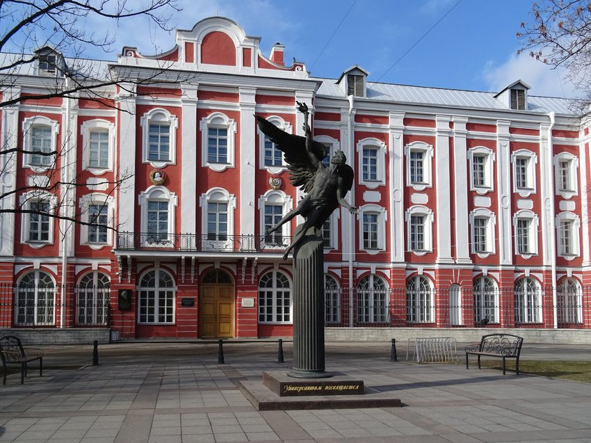
Discuss these questions with students.
1. Can you name at least 4-5 famous people who worked or were educated at St Petersburg University? How have graduates of Saint Petersburg University influenced Russian and global history?
2. Why do you think so many political leaders (including Vladimir Putin and Dmitry Medvedev) studied at this university?
3. What do you think were the first faculties of the University?
4 What does being a student of Saint Petersburg State University mean to you?
4. What challenges and opportunities do you think Saint Petersburg University might face in the future?
5. How can the university balance tradition with innovation in modern education?
Read the text paying attention to names , dates and important milestones mentioned in the text.
Saint Petersburg University is Russia’s first university and a globally recognized centre of science and education. Founded in 1724, it is the oldest higher education institution in the country. Today, it successfully blends tradition with innovation, standing as one of the world’s leading hubs for education, research, and culture. As a dynamic institution, it offers multidisciplinary academic programmes that combine fundamental theory with real-world applications.
Admission to Saint Petersburg State University is exceptionally competitive. In 2023, the average Unified State Examination (USE) score of admitted applicants was 90 out of 100, reflecting the university’s high academic standards.
- Domestic Applicants: Over 106,000 students applied for bachelor’s and specialist programmes, with only 4,617 accepted—an acceptance rate of ~4%.
- International Applicants: More than 21,000 students from 100 countries competed for state-funded scholarships, with just 1,000 awarded spots (also a ~4% acceptance rate).
Saint Petersburg University consistently ranks among the world’s top institutions:
- #35 in the Three University Missions Ranking (2022)
- #242 in the QS World University Rankings (2022)
- 301–400 in the Academic Ranking of World Universities (2021)
The History of Saint Petersburg University
Saint Petersburg University ,the oldest and one of the largest universities in Russia, celebrated its 300th anniversary in 2024. Emperor Peter the Great established the university as part of a comprehensive system of science and education, which included the Russian Academy of Sciences, the University, and the Academic Gymnasium. A Senate decree on January 28, 1724, outlined its mission: "The University is an assembly of learned persons to teach young people such noble sciences as Theology, Law, Medicine, and Philosophy as we know them today."
Initially, many professors were invited from Germany, and lectures were delivered in Latin, following European traditions. The early years saw few students, and there was no strict faculty or curriculum system—students could freely choose their professors and lecturers.
The first rector, Gerhard Friedrich Miller, was a German historian and academician who studied Siberia and participated in the Second Kamchatka Expedition. The second rector, Stepan Krasheninnikov, was a geographer and explorer who authored the first comprehensive description of Kamchatka in the early 18th century—a work still relevant today, even republished in 1994.
One of the most influential rectors was Mikhail Lomonosov (1758–1765), who revolutionized the university by introducing structured curricula, promoting education in Russian, and advocating for equal access to education regardless of social class. His leadership marked the university’s peak in the 18th century, producing many renowned scientists.
By the late 18th century, the university shifted its focus from training scientists for the Academy of Sciences to educating teachers for secondary schools. On February 8, 1819, Emperor Alexander I reorganized the Main Pedagogical Institute into Saint Petersburg University, restoring its original name and marking a new chapter in its development.
In 1821, it was renamed Saint Petersburg Imperial University. Initially, it had three faculties: History and Philology, Law and Philosophy, and Physics and Mathematics—a structure borrowed from German universities. In 1855, the Faculty of Oriental Languages was added, and this system remained until 1918.
In 1830, the university moved into the Twelve Colleges building, designed by architect Domenico Trezzini.The 19th century was the university’s golden age, producing outstanding scientists and pioneering research in various fields:
- Mathematics (Pafnuty Chebyshev)Physics (Emil Lenz)
- Chemistry (Dmitri Mendeleev, Alexander Butlerov)
- Botany (Andrey Beketov)Physiology (Ivan Sechenov)Geology (Alexander Inostrantsev)
- Russian history (Konstantin Bestuzhev-Ryumin)
Scientific societies flourished, including the Russian Chemical Society (founded by Mendeleev in 1869) and the Natural Sciences Society (1868). The university also established the first Institute of Chemistry (1893) and Physical Institute (1901) in Russia. In 1895, physicist Alexander Popov, a university graduate, demonstrated the first radio transmitter, sending the first radiogram between university buildings a year later.
By the early 20th century, the university had become a hub for world-class scholars, including mathematicians Andrey Markov and Vladimir Steklov, physicist Orest Khvolson, and astronomer Sergey Glazenap. In 1915, a branch of the university was opened in Perm, which later became Perm State University. Despite the hardships of World War II and the Siege of Leningrad, the university continued operating, having been relocated to Saratov in 1942 before returning in 1944.
In the 1960s, new faculties emerged, including Psychology, Journalism, and Applied Mathematics and Control Processes. A new campus was built in Stary Peterhof for natural sciences.
Today, the university comprises 24 faculties and institutes, including:
- Biology, Oriental Studies, Mathematics and Mechanics
- Medicine, International Relations, Political Science
- Psychology, Sociology, Economics, Law
- Graduate School of Management, Institute of Earth Sciences
It employs 13,000 staff, including 6,000 professors (1,500 with doctoral degrees). Around 38,000 students study here, including 4,000 international students.
Academic Programmes and Degrees
- Undergraduate: 4-year Bachelor’s programmes (some faculties retain 5-year specialist degrees).
- Graduate: 2-year Master’s programmes and 3-year Ph.D. (Candidate of Science) programmes.
- Second-degree programmes are available for additional qualifications.
Campuses
- Main Campus (Vasilyevsky Island): Central administrative buildings, libraries, museums.
- Smolny Campus: Faculties of Sociology, International Relations, Management.
- Peterhof Campus: Natural sciences faculties, research institutes, student housing.
- Graduate School of Management campus (Strelna)
Famous Alumni
- Writers: Ivan Turgenev, Alexander Blok
- Scientists: Dmitry Mendeleev, Ilya Mechnikov
- Politicians: Vladimir Lenin, Vladimir Putin, Dmitry Medvedev
- Artists: Nicholas Roerich, Igor Stravinsky
- The university has produced nine Nobel laureates and two Fields Medalists, cementing its legacy as a cradle of intellectual and cultural achievement.
Factfile
1. Two Russian Presidents Graduated Here
- Vladimir Putin (Law, 1975) and Dmitry Medvedev (Law, 1987) both studied at SPbU.
2. Invented the First Radio Receiver
- Physicist Alexander Popov (SPbU graduate) demonstrated the world’s first radio transmitter in 1895—before Marconi.
- The university’s Popov Museum holds his original prototypes.
3. Owns the Largest University Library in Russia
- The M. Gorky Scientific Library houses 7+ million volumes, including rare medieval manuscripts and Peter the Great’s personal book collection.
4. Invented the First Soviet Computer
- In 1950, SPbU scientists created Setun, the world’s first ternary computer (using a 3-digit logic system instead of binary).
5. Nine Nobel Prize Laureates
- Alumni and faculty include Nobel winners in Physics, Chemistry, and Economics, such as:
Ivan Pavlov (Physiology, 1904) – Famous for Pavlov’s dogs and conditioned reflexes.
Leonid Kantorovich (Economics, 1975) – Pioneer of linear programming.
6. Unique Legal Status
- In 2009 SPbU (along with Moscow State University) was granted the right to issue its own diplomas, separate from the Russian federal system.
7. Educated the First Female Russian Scientist
- Sofia Kovalevskaya, the world’s first female full professor of mathematics, studied at SPbU (though initially had to attend lectures unofficially due to 19th-century gender restrictions).
8. Campus in a UNESCO World Heritage Site
- The Twelve Colleges building (main campus) is part of St. Petersburg’s historic center, a UNESCO-listed site. Its corridors stretch for 1.2 km—longer than the Vatican’s!
9. The First Russian Woman Professor
- Sofia Kovalevskaya, a mathematics genius, had to fight for her education. Though women were officially barred from universities in the 19th century, she audited classes at SPbU before becoming the first female professor in Northern Europe.
10. The First Russian Psychology Lab
- Founded by Vladimir Bekhterev, a pioneer in neurology, SPbU opened Russia’s first experimental psychology laboratory in 1885—decades before Freud’s theories became mainstream.
11. A Secret Soviet Nuclear Research Hub
- During the Cold War, SPbU physicists worked on classified atomic projects. Today, the university remains a leader in quantum computing and nuclear research.
12. The World’s Only "Mathematical Rain" Monument
- On campus, a "Mathematical Rain" sculpture honors the legendary St Petersburg Mathematical School, founded by Leonhard Euler and advanced by Chebyshev, Markov, and Lyapunov.
13. A Library with Peter the Great’s Personal Notes
- The M. Gorky Library holds Peter the Great’s handwritten notes, 15th-century incunabula, and Napoleon’s personal map collection.
14. The First Russian Legal Code Drafted Here
- SPbU’s law faculty helped draft Russia’s first judicial reforms (1864) under Alexander II, transforming the empire’s legal system.
15. A University with Its Own Space Satellite
- In 2017, SPbU launched "Universitetsky-Tatyana-2", a satellite studying cosmic radiation—making it one of the few universities in the world with its own space programme.
- Speaking task 1
Viral Pitch (5 min per group)
Create a 1-minute TikTok-style video script to "sell" SPbU to international students. Must include:
- 1 historical fact.
- 1 modern achievement.
- 1 fun tradition (e.g., Scarlet Sails).
Speaking task 2
Fact-Finding Mission (10 min)
Each group picks 3 amazing SPbU facts from the list above (or researches their own using university websites). They must:
- Explain why each fact is significant.
- Connect it to modern science/culture (e.g., "Mendeleev’s table is why we study chemistry this way today").
HOME ASSIGNMENT
Exercises
1.1 Match words 1-19, their transcription and definitions a-s.
1.astronomy | |baɪˈɒlədʒɪ| | a. the scientific study of plants |
2.biology | |zɑː| | b. the scientific study of basic characteristics of substances and ways they react or combine |
3.botany | |ˌembrɪˈɒlədʒɪ| | c.a school that prepares children for university |
4.chemistry | |dʒɪmˈneɪzɪəm| | d. people who study a subject in great detail, esp. at a university |
5.tzar | |əˈstrɒnəmɪ| | e. treatment for illness or injury, or the study of this |
6.embryology | |ˈbɒt(ə)nɪ| | f. a building from which scientists can watch the planets, the stars, the weather,etc |
7.geology | |ˈskɒlə| | g. ruler |
8.gymnasium | |ˈkemɪstrɪ| | h. the study of numbers,shapes,and space using reason and usually a special system of symbols and rules for organizing them |
9.scholars | |mæθ(ə)ˈmætɪks| | i. the scientific study of the natural processes of living things |
10mathematics | |dʒɪˈɒlədʒɪ| | j. the study of the rocks and similar substances that make up the earth`s surface |
11. medicine | |əbˈzɜːvət(ə)rɪ| | k. the study of animal development between the fertilization of the egg and the time when the animal is born |
12. observatory | |ˈmeds(ə)n| | l. an academic field that focuses on the languages,cultures,history,religions and societies of Asia and the Middle East.(also called Asian Studies or Eastern Studies) |
13.oriental studies | |fɪˈlɒsəfɪ| | m. the scientific study of the universe and of objects that exist naturally in space,such as the moon, the sun, planets and stars. |
14.pedagogical | |ˈsemɪn(ə)rɪ| | n. the use of reason in understanding such things as the nature of the real world and existence,the use and limits of knowledge,and the principles of moral judgement |
15.philological | |θɪˈɒlədʒɪ| | o. the scientific study of the way in which the bodies of living things work |
16.philosophy | |ˌfɪzɪˈɒlədʒɪ| | p. relating to the methods and theory of teaching |
17.physiology | |ˌpedəˈɡɒdʒɪkəl| | q. the study of religion and religious belief |
18.theology | |ˌfɪləˈlɒdʒɪkəl| | r. a college for training people to become priests or ministers |
19.seminary | |ɔːrɪˈent(ə)l ˈstʌdɪz| | s. relating to the study of language,esp. its history and development |
20.curriculum Pl curricula | |kəˈrɪkjʊləm| | t. the subjects studied at school, college, etc and what each subject includes |
Answer · 1.1
1.1
ANSWER 1.1 (word → transcription → definition)
1 astronomy |əˈstrɒnəmɪ| m | 2 biology |baɪˈɒlədʒɪ| i | 3 botany |ˈbɒt(ə)nɪ| a
4 chemistry |ˈkemɪstrɪ| b | 5 tzar |zɑː| g | 6 embryology |ˌembrɪˈɒlədʒɪ| k
7 geology |dʒɪˈɒlədʒɪ| j | 8 gymnasium |dʒɪmˈneɪzɪəm| c | 9 scholars |ˈskɒlə| d
10 mathematics |mæθ(ə)ˈmætɪks| h | 11 medicine |ˈmeds(ə)n| e | 12 observatory |əbˈzɜːvət(ə)rɪ| f
13 oriental studies |ɔːrɪˈent(ə)l ˈstʌdɪz| l | 14 pedagogical |ˌpedəˈɡɒdʒɪkəl| p
15 philological |ˌfɪləˈlɒdʒɪkəl| s | 16 philosophy |fɪˈlɒsəfɪ| n
17 physiology |ˌfɪzɪˈɒlədʒɪ| o | 18 theology |θɪˈɒlədʒɪ| q | 19 seminary |ˈsemɪn(ə)rɪ| r
20 curriculum |kəˈrɪkjʊləm| t
1.2 Read the statements below and decide if they are true or false. Justify your answer by referring to specific details from the text.
- T/F/NG: When SPbU was formally established in 1724, its initial operational structure closely mirrored that of German universities.
- T/F/NG: The university's shift from training Academy of Sciences researchers to secondary school teachers in the late 18th century represented a deliberate downgrade of its academic mission.
- T/F/NG: Mendeleev's Periodic Table was immediately recognized as a groundbreaking scientific achievement during his lifetime.
- T/F/NG: SPbU's evacuation to Saratov during WWII resulted in a complete cessation of all academic activities until 1944.
- T/F/NG: The university's current right to issue its own diplomas, granted in 2009, makes it completely independent from Russia's national education quality standards.
- T/F/NG: Sofia Kovalevskaya's unofficial attendance at SPbU lectures in the 19th century was exceptional because Russian universities formally didn’t admit women on equal terms with men.
- T/F/NG: SPbU's participation in Cold War-era nuclear research was exclusively focused on civilian applications of atomic energy.
- T/F/NG: The university's consistently strong performance in mathematics is partly attributed to the lasting influence of the St Petersburg Mathematical School founded by Euler.
- T/F/NG: SPbU's scientific achievements during its "golden age" in the 19th century were limited to theoretical mathematics.
Answer · 1.2
1.2
ANSWER 1.2 T/F/NG
1 F/NG — in 1724: European traditions and professors from Germany, but no rigid faculty system; the text does not support “closely mirrored German universities”.
2 F/NG — a change of focus, not a “downgrade”.
3 NG — nothing about immediate recognition of Mendeleev’s table.
4 F — in Saratov the university kept working.
5 F — own diplomas ≠ full independence from quality standards.
6 T — women were not officially admitted; Kovalevskaya attended unofficially.
7 F — classified atomic projects, not only civilian ones.
8 T — St Petersburg Mathematical School (Euler and others).
9 F — the golden age: chemistry, physics, botany… not only theoretical maths.
1.3. Complete the sentences with information from the text and the factfile.
- Saint Petersburg University was founded in ______ by Peter the Great.
- The first subjects taught at SPbU were Theology, Law, Medicine, and ______.
- Dmitri Mendeleev, a famous SPbU professor, created the ______.
- The university library has over ______ million books, including very old ones.
- Alexander Popov, who studied at SPbU, made the first ______ in 1895.
- Two Russian presidents who went to SPbU are Vladimir Putin and ______.
- During World War II, the university moved temporarily to ______.
- The ______ campus of SPbU is where science students study and do research.
- Only about ______% of students who apply to SPbU get accepted.
- The famous ______ building is part of St. Petersburg's UNESCO World Heritage Site.
- In 2017, SPbU sent its own ______ to study space radiation.
- ______ was the first important Russian woman mathematician who studied at SPbU.
- SPbU's law teachers helped write Russia's first modern ______ in the 1800s.
- SPbU has the strongest ______ of any Russian university.
- Since 2009, SPbU can give students its own special ______.
- Mendeleev started the Russian ______ Society at SPbU.
- The ______ campus has classes in Sociology and International Relations. (Smolny)
Answer · 1.3
1.3
ANSWER 1.3
1724; Philosophy; Periodic Table; 7; radio transmitter/receiver (the 0610 text says transmitter); Dmitry Medvedev; Saratov; Peterhof; 4; Twelve Colleges; satellite; Sofia Kovalevskaya; judicial reforms/legal code; library (or Mathematical School); diplomas; Chemical; Smolny
1.4 Match the famous graduates with their fields:
- Dmitri Mendeleev a) Politics
- Igor Stravinsky b) Chemistry
- Vladimir Putin c) Poetry
- Alexander Blok d) Art
- Nicholas Roerich e) Music
Answer · 1.4
1.4
ANSWER 1.4
Mendeleev→b Chemistry; Stravinsky→e Music; Putin→a Politics; Blok→c Poetry; Roerich→d Art
1.5 Complete the sentences with words from the text:
- The university is a ………………centre of science.(adj)
- Lomonosov ……………. the right of lower-class students to study. (Past Simple verb)
- The university ………… tradition and innovation. ( Present Simple verb)
Answer · 1.5
1.5
ANSWER 1.5
1 globally recognized 2 advocated 3 blends
1.6 Match English and Russian equivalents.
1. | Professor | а) первокурсник |
2. | Associate Professor | b) степень бакалавра |
3. | Teaching Assistant | c) второкурсник |
4. | Assistant Professor | d) третьекурсник |
5. | Ph.D. (Philosophy Doctor) | e) аспирант |
6. | Bachelor's Degree | f) старший преподаватель |
7. | Master's Degree | g) доцент |
8. | freshman | h) степень магистра |
9. | sophomore | i) профессор |
10. | junior | j) ассистент |
11. | senior | k) степень канд./ докт. наук |
12. | graduate student | l) студент выпускного курса |
Answer · 1.6
1.6
ANSWER 1.6
1-i профессор 2-g доцент 3-j ассистент 4-f старший преподаватель
5-k степень канд./докт. наук 6-b бакалавра 7-h магистра
8-a первокурсник 9-c второкурсник 10-d третьекурсник
11-l выпускного курса 12-e аспирант
1.7 Categorize the words into 4 groups based on their endings and meanings.
- -ist / -ian (Person who studies/works in a particular field)
Example: chemist, psychologist - -y / -ics / -s/-ism (Name of an academic discipline)
Example: chemistry, physics - -ical / -al / -ic (Adjective form)
Example: chemical, historical - -er / -or / -ent (Other profession-related nouns)
Example: manager, scientist
Words to sort: Chemist, geology, history, sociological. mathematician, geographer, psychological, journalism, historical, historic management, psychology, sociologist, philology, economics, journalistic, economist, physical, philosopher, lawyer, chemical, managerial, geological, physics, economic, physicist, geographic, historian, philological, biology, scientific, mathematics, chemical, physician, philosophy, chemistry, law, psychologist, philologist, geography, scientist, manager, mathematical, sociology, journalist, geologist.
Answer · 1.7
1.7
ANSWER 1.7
-ist/-ian: chemist, mathematician, sociologist, economist, physicist, historian, physician, psychologist, philologist, journalist, geologist, scientist
-y/-ics/-s/-ism: geology, history, journalism, psychology, philology, economics, physics, biology, mathematics, philosophy, chemistry, law, geography, sociology, management
-ical/-al/-ic: sociological, psychological, historical, historic, journalistic, physical, chemical, managerial, geological, economic, geographic, philological, scientific, mathematical
-er/-or/-ent: geographer, philosopher, lawyer, manager
1.81.11 Choose the correct option in brackets.
1. The University consists of (beyond, over, above) 20 faculties.
2. Saint Petersburg State University is the oldest (institute, institution) of higher (learning, studying, teaching) in Russia.
3. It was (found, founded) (at. in) the same time as the Russian Academy of (Science, Sciences) by a decree of Emperor Peter the Great.
4. (During, within, throughout) its history the University has been one of the most important centers of academic research.
5. (A number of, the number of) University graduates have become prominent scientists.
6. Scientific discoveries and achievements of university (scholars, scientists) who worked (on, at) Faculty of Chemistry went down in the history of (national, nation) science.
7. Students (take, pass) exams at the end of each semester.
8. Students from areas outside Saint Petersburg are accommodated in the University (hostels, hotels).
9. The University offers a wide range of (subjects, objects). Students may (attend, visit) lectures and seminars in different departments.
10. The faculty is (important, responsible) for training high-skilled specialists (in, on) international relations.
11. The University department chairpersons are the most (imminent, eminent) professors.
12. The Second World War was not yet over (that's why, when, because) the University opened its 1944 (long, academic, full) year.
13. Practical (experience, experiment) plays an important role in teaching.
14. Undergraduate students specialize (on, at, in) their area of study when they are (in, at, on) the third year of studies.
15. Today there are more than 20,000 students (at, in) the University: over 11.000 are (full-day, full-time) students, about 5,000 are (part-time, evening) students and the rest are (correspondence, extramural) students.
16. (Reception. admission) to the University is by (competitive, competition) entrance (examinations, tests).
17. Graduate students (pass, take) state examinations and write a (diploma, thesis, dissertation).
Answer · 1.8
1.8
ANSWER 1.8 (choose the correct option)
1 over
2 institution / learning
3 founded / in / Sciences
4 Throughout (or During)
5 A number of
6 scholars (or scientists) / at / national
7 take
8 hostels
9 subjects / attend
10 responsible / in
11 eminent
12 when / academic
13 experience
14 in / in (specialize in; in the third year)
15 at / full-time / part-time / correspondence (or extramural)
16 Admission / competitive / examinations
17 take / thesis (or dissertation)
1.9 Match the Russian verbs and their English equivalents.
1 Основать 2 внести вклад 3 окончить (учебное заведение) 4 сдавать экзамены 5 сдать экзамены 6приводить к (возникновению) 7 специализироваться 8 восстанавливать (учебное заведение) 9 давать начало 10 проводить обучение по предмету 11 посещать (лекцию) 12 выбрать предмет 13 поступить (в учебное заведение) 14 хорошо успевать | A to graduate (from) B to be good (at) C to specialize (in) D to re-establish E to result (in) F to take examinations (in) G to contribute to H to found I to provide a course J to give rise (to) K to pass examinations (in) L to attend (a lecture) M to enter N to take a course |
Answer · 1.9
1.9
ANSWER 1.9 RU→EN
1 H to found
2 G to contribute to
3 A to graduate (from)
4 F to take examinations (in)
5 K to pass examinations (in)
6 E to result (in)
7 C to specialize (in)
8 D to re-establish
9 J to give rise (to)
10 I to provide a course
11 L to attend (a lecture)
12 N to take a course
13 M to enter
14 B to be good (at)
1.10 Transformations Trajectory 4*
Rewrite the second sentence so that it has a similar meaning to the first, using the word given in capitals. Do not change the word given.
- Dmitri Mendeleev created the Periodic Table while working at SPbU.
Transformation:
→ It was _____ the Periodic Table. - SPbU is so prestigious that even presidents like Putin graduated from it.
Transformation:
→ So _____ that even presidents like Putin graduated from it. - The Twelve Colleges building was designed by Domenico Trezzini.
Transformation: - → It was _____ designed the Twelve Colleges building.
- Women were not allowed to enroll officially in the 19th century.
Transformation:
→ Under no circumstances _____ officially in the 19th century.
Studying at SPbU is challenging because of its high standards.
Transformation:
→ Were _____, studying at SPBU would be easier.
Answer · 1.10
1.10
ANSWER 1.10 Trajectory 4*
1 It was Mendeleev who created the Periodic Table.
2 So prestigious is SPbU that even presidents like Putin graduated from it.
3 It was Domenico Trezzini who designed the Twelve Colleges building.
4 Under no circumstances were women allowed to enroll officially in the 19th century.
5 Were it not for its high standards, studying at SPbU would be easier.
Lesson 2
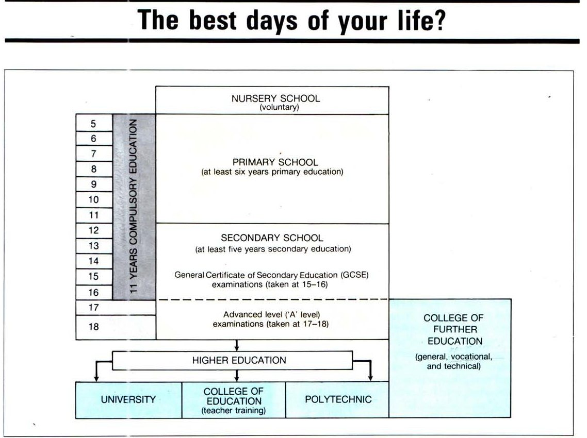
Task: Look at the chart and describe how state education is organised in England.
Comparison Table
Feature | State Schools | Independent Schools |
|---|---|---|
Cost | Free | £15,000–£50,000/year |
Admission | Non-selective (except grammars) | Entrance exams & interviews |
Class Size | 20–30 students | 10–15 students |
Curriculum | National Curriculum | GCSEs/A-Levels/IB (flexible) |
Extracurriculars | Limited | Extensive (sports, arts, etc.) |
Oxbridge Entry | ~25% of students | ~40–50% of students |
Independent schools, also known as private schools, are educational institutions that operate independently of government funding and control. They are typically funded through tuition fees, donations, and endowments. Here’s a general overview of independent schools:
1. Types of Independent Schools
- Day Schools: Students attend during the day and return home in the evening.
- Boarding Schools: Students live on campus, often with structured schedules.
- International Schools: Follow global curricula (e.g., IB, American, British) and cater to expatriates or globally mobile families.
- Religious Schools: Affiliated with a faith (e.g., Catholic, Jewish, Islamic) and may include religious instruction.
- Special Needs Schools: Cater to students with specific learning or physical disabilities.
- Progressive/Alternative Schools: Focus on non-traditional teaching methods (e.g., Montessori, Waldorf).
Answer · 2.chart
2.chart
ANSWER / sample (State vs Independent table)
State: free, mostly non-selective, 20–30, National Curriculum, limited extracurriculars, ~25% Oxbridge.
Independent: £15–50k, exams+interviews, 10–15, flexible, extensive activities, ~40–50% Oxbridge.
Listen to the interview of Mr Ian Beer and decide what kind of school he works at.Intro 1
Answer · 2.listen1
2.listen1
ANSWER (Ian Beer / Intro 1) — from the tapescript
Harrow = independent / public boarding school for boys (Head Master Ian Beer).
Comprehensive questions.
1. Why were elite private schools like Harrow originally called "public schools" in the UK, and why did they later adopt the term "independent"?
2. How does Harrow School discipline students differently from traditional methods (e.g., corporal punishment), and what values does this reflect?
3. The speaker mentions educating "the whole man." What does this phrase imply about Harrow’s approach to learning beyond academics?
4.How might the experience of a student at Harrow differ from that of a student at a state school, based on the text? Consider social, academic, and extracurricular aspects.
5. "Independent schools perpetuate social inequality." Using evidence from the text (e.g., fees, activities), argue for or against this statement.
Tapescript 1aInterview with Mr Ian Beer, Head Master of Harrow SchoolI = InterviewerB = Mr BeerI Let me ask you first, er, Harrow School and schools like it are known as ‘independent’ schools, and until recently they were referred to as ‘public’ schools. Why is it that a private school was known as a public school? B You must remember that the vast majority of the independent schools were founded well before any government in this country made state education available to all. Therefore, before 1900, all these independent schools were available to the total public. Admittedly they had to pay fees. And that is where the name ‘public’ came from. Once the government began to legislate to give all children in the land a state education then the public schools, which were indeed private, changed their name to being ‘independent’, in other words, independent of government control. I Has Harrow School changed in the past hundred years? B I think that if a foreigner came to Harrow Hill and looked at the boys in the High Street, and the masters, they would think it hadn't . The boys wear straw hats, they wear the old what is called a ‘bluer’ - a blazer kind of garment - during the week, they wear tails on a Sunday, the senior boys wear top hats. All the masters have to teach in suits and wear gowns. I have to wear my mortar board to raise my hat to the boys as they raise their hat to me. And there is a traditional formality along the High Street. Once you dive into the classroom, or into a boarding house, or into my study, you would find that the place had changed at a deeper level very very much indeed; the curriculum of course has changed fundamentally, science was not taught here in the last century; er ... that Fox Talbot, who started photography in this country, started his experiments in this very house, but was banned by the headmaster as he did not want chemistry to be taught. So today you will find Latin and Greek is taught as it was in 1570, but you will also find craft design technology, Russian, computer sciences, and a lot of very modern teaching techniques in all subjects. I You have 770 boys here between the ages of thirteen and eighteen. Erm ... what about discipline? How do you control them? B Well, we’re rather a village on the hill. There are 770 boys, there are over 200 people employed here, who live on the hill with their families, and we try and run it as a little village. We do not, as a lot of er ... other people I know think, we do not beat any boys here. Erm, we try and encourage them to treat other people as they would be treated. We’re very fussy about courtesy. And the normal kinds of ill discipline, which you would find in any family of young boys growing up and spreading their wings, are usually things which are anti-social. And so we try and punish them by making them do something back for the community. If you had been here this morning, you would have found a senior boy with a group of naughty boys at quarter to seven in the morning. They would be clearing up all the litter over the main public streets of Harrow Hill in order to keep our environment clean and tidy. I As this is a boarding school, let's talk a bit about the extra-curricular activities. What ... what do you do with the children when they're not in class? B We here feel strongly that we educate 'the whole man'. And therefore, because they're here twenty-four hours of the day, it gives us the opportunity of , erm, carrying out our academic teaching in the formroom, and then in the after- noons and evenings we devote our time to such activities as teaching acting, music, art, technology, all the kind of games you could possibly think of, society life - debating societies, science societies, philosophy societies, er ... chapel services, communion services. In other words we try here, I come back to the word I used earlier, we are really a village, (laugh) and we have total village life. |
Answer · 2.comp
2.comp
ANSWER — Harrow / Ian Beer (Comprehensive questions)
1. Before state education existed, these schools were open to the paying public → “public schools”. After state schooling appeared, they rebranded as independent (= independent of government control/curriculum).
2. They do not cane/beat boys; they insist on courtesy; anti-social behaviour is punished with community service (e.g. picking up litter early in the morning). Values: respect and responsibility to the community, not fear.
3. “Whole man”: not only classroom lessons, but drama, music, sport, societies, chapel — boarding-school “village” life 24 hours a day.
4. Harrow: boarding, uniform/hats, rich extracurriculars and a village structure; a state school: usually day attendance, fewer resources and less intensive out-of-class life.
5. For the claim (inequality): high fees → mainly the well-off can attend. Against: strong academics and extracurriculars; schools try to shed the “aristocracy only” image. (Pick a side + 1–2 points from the text/audio.)
Now listen to a radio programme on independent schools and answer the questions.Intro2
1.What major reforms have taken place in British independent schools (like Eton and Winchester) since the 1980s, and how do these reflect a shift away from old traditions?
2.Why do independent schools now prefer the term "independent" over "public," and what image are they trying to promote with this change?
3. Despite modernization, why do critics argue that the most important aspects of British public schools (like social elitism and disproportionate influence in top professions) remain largely unchanged?
4.How does the emphasis on academic achievement (e.g., A-levels) in top independent schools today contrast with their historical focus on sports and classical education?
Answer · 2.radio
2.radio
ANSWER / from the radio tapescript
1 Since the 1980s: fagging abolished (Eton), more provincial unis, science compulsory, almost no beating; “independent” image, labs, IT.
2 Independent = initiative/enterprise, not snobbery/prejudice.
3 Critics: still dominate the Cabinet, Oxbridge, top professions.
4 Now the focus is A-levels; earlier sport and classics mattered more than exams.
Radio programme on independent schools
P = Presenter
W = Patricia Wilby
P Hello, and welcome to today’s Worldly Wise, the programme that investigates current issues and tells you, the consumer, all about them. Today our attention turns to independent schools, the alternative system for those that can afford it. Most people believe that independent schools offer their pupils advantages that state schools don’t. Some think this is unfair. Others will go to the edge of ruin to get the ‘best’ education for their children. What are the independent schools like these days? Are they still as they were depicted in so many books and films? We sent Patricia Wilby to investigate.
W In 1980 Eton abolished fagging - that is younger boys acting as servants to older, more senior ones - after the Head had at last persuaded two-thirds of his housemasters that this was an outdated institution. Winchester, for the first time in its history, sent more boys to provincial universities than it sent to Oxbridge. Bradford Grammar School decided that boys of thirteen and fourteen should be compelled to study science. And the Head Master of Oundle was able to assert that, although the practice had not been formally abolished, boys had not been beaten ‘for many years’. Public schools are not what they were. For a start, you’re not supposed to call them ‘public’ schools any more. They prefer the term ‘independent’ school, suggesting initiative and enterprise instead of snobbery and prejudice. Over the past fifteen years, they have set out to bury the image of institutions that were socially divisive, obsessed with the classics, disdainful of industry because it meant money was earned, not inherited, and where success on the sports field was more important than success in the exam room. The modern public school will point out that engineering is the largest single destination for its leavers. It will show you computer terminals, science laboratories, and craft workshops. It will introduce you, if at all possible, to pupils whose backgrounds are far from aristocratic. Yet what is remarkable about this revolution is not so much that it has happened, but that it has happened so recently. And if much has changed, what critics regard as the most important things have not. The majority of the nation’s Cabinet Ministers, top civil servants, ambassadors, High Court judges, military leaders, bishops, and bank directors went to public schools. They still account for about half the entrants to Oxford and Cambridge. Although most Western countries have independent school sectors, the British public school system is unique in the extent to which it is set apart from the rest of the nation. This isolation is possible because, by comparison, the private sector in Britain is remarkably small. Around five per cent of the nation’s schoolchildren go private, while in the United States the figure is ten per cent, and in France thirty per cent. But the most significant change of all is the importance that is now attached to academic achievement. In the top schools, the focus is firmly on A levels. GCSEs are regarded as a distraction, and pupils might take one or two when they are fifteen. It is academic success that is going to keep top people where they think they belong - at the top.
P And that was a special report by Patricia Wilby. Next week we’ll be looking at the state of state education. Until then, good-bye.
WINSTON CHURCHILL’S PREP SCHOOL
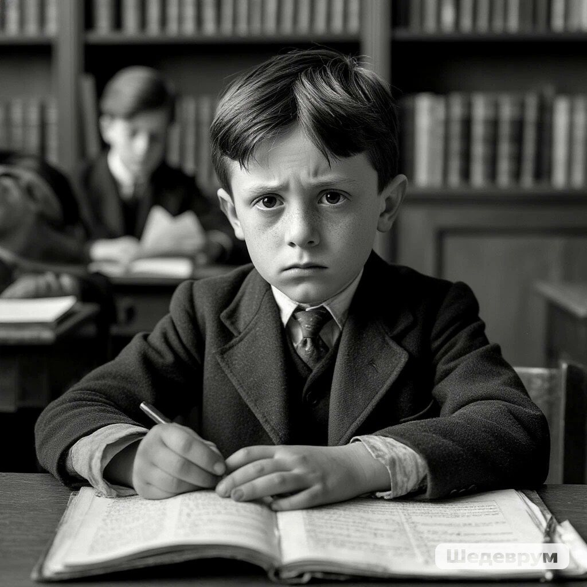
Complete the table using the sentences
English Word | Context Sentence | Meaning from Context | Russian Translation |
|---|---|---|---|
Mortar board | "The graduate tossed her mortar board..." | ||
Impertinent | "The teacher scolded the impertinent question..." | ||
Bleak | "The bleak landscape had no trees..." | ||
Declension | "In Latin, 'puella' follows first declension..." | ||
Rigmarole | "After the rigmarole of paperwork..." | ||
Formidable | "The formidable opponent was unbeaten..." | ||
Rejoinder | "Her witty rejoinder made people laugh..." |
Answer · 2.vocab_table
2.vocab_table
ANSWER (Churchill vocab table)
mortar board — graduation cap — конфедератка
impertinent — rude — дерзкий
bleak — depressing — унылый
declension — noun cases — склонение
rigmarole — confusing fuss — волокита
formidable — impressive/scary — грозный
rejoinder — sharp reply — реплика
1.Why do you think graduates throw their mortar boards in the air?
2.Can you think of an impertinent reply if someone asks, ‘Did you do your homework?
3.How would you feel if you woke up to a bleak morning—dark, rainy, and cold?
4.Can you think of English words that change like this? (e.g., I/me/my).
5.What kind of rigmarole have you dealt with? (e.g. applying for University, setting up a new phone).
6.Who or what do you find formidable? (e.g., a strict teacher, a giant wave).
7.What’s a funny rejoinder to ‘Why are you late?
Fill in the blanks with: mortar board, impertinent, bleak, declension, rigmarole, formidable, rejoinder
After years of study, Maria threw her _____ in the air at graduation.
The _____ winter landscape made everyone feel depressed.
"That's none of your business!" was his sharp _____.
Learning noun _____ is essential for studying Latin.
The new student showed _____ behavior by interrupting the teacher.
Getting a visa involved so much _____ that I almost gave up.
The _____ boxing champion hadn't lost a match in 5 years.
Answer · 2.fill
2.fill
ANSWER (blanks)
1 mortar board 2 bleak 3 rejoinder 4 declension 5 impertinent 6 rigmarole 7 formidable
Complete the paragraph using words from the list:
impertinent, rigmarole, formidable, rejoinder, bleak
The job interview process was a real _____. First, there was a _____ written test that scared many applicants. When one candidate made an _____ remark about the CEO, the hiring manager's quick _____ put him in his place. Outside, the _____ weather matched everyone's nervous mood.
Answer · 2.para
2.para
ANSWER (paragraph)
rigmarole; formidable; impertinent; rejoinder; bleak
Choose the BEST word to complete each sentence:
The (apartment/declension) of Russian nouns can be challenging for learners.
Her (rejoinder/mortar board) to the criticism was so clever it ended the debate.
After the (bleak/formidable) news about the war, everyone felt hopeless.
"Don't take that (impertinent/rigmarole) tone with me," the judge warned.
The (formidable/rigmarole) of setting up the new computer system took all day.
Read the text.
Answer · 2.best
2.best
ANSWER (BEST word)
1 declension 2 rejoinder 3 bleak 4 impertinent 5 rigmarole
The school my parents had selected for my education was one of the most fashionable and expensive in the country. It modelled itself upon Eton and aimed at being preparatory for that Public School above all others. It was supposed to be the very last thing in schools. Only ten boys in a class; electric light (then a wonder); a swimming pond; spacious football and cricket grounds; two or three school treats, or ‘expeditions’ as they were called, every term; the masters all M.A.’s in gowns and mortar-boards; a chapel of its own; no hampers allowed; everything provided by the authorities.
It was a dark November afternoon when we arrived at this establishment. We had tea with the Headmaster, with whom my mother conversed in the most easy manner. I was preoccupied with the fear of spilling my cup and so making ‘a bad start’. I was also miserable at the idea of being left alone among all these strangers in this great, fierce, formidable place. After all I was only seven, and I had been so happy in my nursery with all my toys. I had such wonderful toys: a real steam engine, a magic lantern, and a collection of soldiers already nearly a thousand strong. Now it was to be all lessons. Seven or eight hours of lessons every day except half-holidays, and football or cricket in addition.
When the last sound of my mother’s departing wheels had died away, the Headmaster invited me to hand over any money I had in my possession. I produced my three half-crowns, which were duly entered in a book, and I was told that from time to time there would be a ‘shop’ at the school with all sorts of things which one would like to have, and that I could choose what I liked up to the limit of the seven and sixpence.
Then we quitted the Headmaster’s parlour and the comfortable private side of the house, and entered the more bleak apartments reserved for the instruction and accommodation of the pupils. I was taken into a Form Room and told to sit at a desk. All the other boys were out of doors, and I was alone with the Form Master. He produced a thin greeny-brown covered book filled with words in different types of print.
‘You have never done any Latin before, have you?’ he said.
‘No, sir.’
‘This is a Latin grammar.’ He opened it at a well-thumbed page. ‘You must learn this,’ he said, pointing to a number of words in a frame of lines. ‘I will come back in half an hour and see what you know.’
Behold me then on a gloomy evening, with an aching heart, seated in front of the First Declension.
Mensa a table
Mensa O table
Mensam a table
Mensae of a table
Mensae to or for a table
Mensa by, with or from a table
What on earth did it mean? Where was the sense in it? It seemed absolute rigmarole to me. However, there was one thing I could always do. I could learn by heart. And I thereupon proceeded, as far as my private sorrows would allow, to memorize the task which had been set me.
In due course the Master returned.
‘Have you learnt it?’ he asked.
‘I think I can say it, sir,’ I replied; and I gabbled it off.
He seemed so satisfied with this that I was emboldened to ask a question.
‘What does it mean, sir?’
‘It means what it says. Mensa, a table. Mensa is a noun of the First Declension. There are five declensions. You have learnt the singular of the First Declension.’
‘But,’ I repeated, ‘what does it mean?’
‘Mensa means a table,’ he answered.
‘Then why does mensa also mean O table,’ I enquired, ‘and what does O table mean?’
‘Mensa, O table, is the vocative case,’ he replied.
‘But why O table?’ I persisted in genuine curiosity.
‘O table – you would use that in addressing a table, in invoking a table.’ And then seeing he was not carrying me with him, ‘You would use it in speaking to a table.’
‘But I never do,’ I blurted out in honest amazement.
‘If you are impertinent, you will be punished, and punished, let me tell you, very severely,’ was his conclusive rejoinder.
Such was my first introduction to the classics from which, I have been told, many of our cleverest men have derived so much solace and profit.
Speaking
Pair Work Task
1. Teacher’s Perspective
Task: Debate: Was Churchill’s teacher too harsh?
- Group A: Argue yes (e.g., "He discouraged curiosity").
- Group B: Argue no (e.g., "Discipline was normal then").
Language focus: Opinions (I strongly believe…, However, from the text…).
Task 2.1 There are 15 inaccurate statements about the passage below. Correct each one to make it factually and contextually correct, preserving the original meaning.
- The school was an affordable institution aimed at middle-class families.
- The narrator’s mother was visibly distressed during tea with the Headmaster.
- Students were permitted to bring personal food hampers to supplement meals.
- The narrator felt excited and independent upon arriving at the school.
- The Headmaster confiscated the narrator’s toys to discourage distractions.
- The "school shop" only sold essential stationery and textbooks.
- The Form Master introduced the narrator to advanced Greek syntax.
- The Latin grammar book was brand-new, with no signs of prior use.
- The narrator was given a full hour to memorize the First Declension.
- Mensa is a second-declension noun with irregular endings.
- The vocative case (O table) is primarily used in poetic metaphors.
- The Form Master encouraged the narrator’s critical questions about Latin.
- The narrator’s prior education had included rigorous Latin lessons.
- Football and cricket were optional activities with no supervision.
- The passage implies the narrator’s love for the school’s strict routines.
Learning Latin can be surprisingly beneficial for students specializing in mathematics, despite its reputation as a "dead" language. Here are some reasons why:
1. Precision in Terminology
- Many advanced mathematical terms are derived from Latin (e.g., quod erat demonstrandum (Q.E.D.), a priori, ad infinitum).
- Latin’s rigid grammatical structure mirrors the logical precision required in mathematical proofs and definitions.
2. Strengthens Logical Thinking
- Latin’s highly inflected syntax (case endings, conjugations) trains the brain to recognize patterns, much like algebraic structures or symbolic logic.
- Translating Latin requires parsing complex sentences—a skill analogous to decomposing mathematical problems into smaller steps.
3. Historical Foundation of Western Mathematics
- Key mathematical texts from the Renaissance and Enlightenment (e.g., Newton’s Principia Mathematica) were written in Latin.
- Understanding Latin provides direct access to untranslated works by Euler, Gauss, or Descartes.
4. Boosts Vocabulary for Advanced Maths
- Terms like vertex (from vertere, "to turn"), radius ("ray"), and calculus ("small stone") have Latin roots.
- Helps decode technical jargon in fields like topology (continuum) or statistics (median from medius).
5. Enhances Abstract Reasoning
- Latin’s lack of native speakers forces learners to engage with it abstractly, akin to manipulating variables in algebra.
- The language’s reliance on context (via declensions) parallels contextual reasoning in proofs.
6. Improves Performance in Formal Logic
- Latin grammar’s strict rules align with the syntax of formal logic and programming languages.
- Studies suggest Latin students outperform peers in standardized math tests, likely due to improved analytical skills.
7. Interdisciplinary Connections
- Latin bridges math with physics, astronomy, and computer science (e.g., algorithm comes from Latinized Arabic Algoritmi).
- Useful for cryptography (e.g., Caesar ciphers) and formal linguistics (Chomskyan grammars).
Study the basic rules for forming plural nouns as outlined in the table.
Origin | Singular noun | Plural noun | Examples |
Greek | -is | -es | Axis basis thesis |
Greek | -on | -a | Phenomenon , cryterion |
Latin | -us | -i | Radius alumnus nucleus |
Latin | -a | -ae | Formula vita |
Latin | -um | -a | Datum, bacterium |
Latin | -ix -ex | -ices | Vertex index appendix |
Answer · 2.1
2.1
ANSWER 2.1 (15 corrections — Churchill)
1 expensive/fashionable, not affordable
2 mother conversed easily
3 no hampers allowed
4 miserable/afraid
5 took money (half-crowns), not toys
6 shop sold all sorts of things
7 Latin First Declension, not Greek
8 well-thumbed book
9 half an hour
10 First Declension
11 vocative = addressing
12 threatened punishment
13 never done Latin before
14 sport in addition to lessons
15 fear/misery, not love of routines
2.2 .Use the rules and form the plural of the following nouns
Basis, continuum, criterion, maximum, focus, nebula, analysis, alumnus, curriculum, emphasis, formula, medium, appendix, quantum, apparatus, crisis, equilibrium, synthesis, phenomenon, stratum, thesis, infinitum, nucleus, symposium, vita, hyperbola, locus, directrix , bacterium, means, hypothesis, vacuum, radius, corona, series, spectrum, polyhedron, axis, genius, minimum, modulus, parenthesis, datum, index, momentum, rhombus, matrix, vertex, phasis, calculus, abscissa, lacuna, species.
HOME ASSIGNMENT
Answer · 2.2
2.2
ANSWER 2.2 plurals
bases, continua, criteria, maxima, foci, nebulae, analyses, alumni, curricula, emphases, formulae/formulas, media, appendices, quanta, apparatus/apparatuses, crises, equilibria, syntheses, phenomena, strata, theses, nuclei, symposia, vitae, hyperbolae/hyperbolas, loci, directrices, bacteria, means, hypotheses, vacua/vacuums, radii, coronae/coronas, series, spectra, polyhedra, axes, geniuses/genii, minima, moduli, parentheses, data, indices/indexes, momenta, rhombi/rhombuses, matrices, vertices, phases (phasis→phases), calculi, abscissae, lacunae, species
Translate the following sentences into Russian.
1.The area of an ellipse equals π/4 times the product of the long and the short diameters or π times the product of the long and the short radii. 2. Analytic methods give us a means of finding the equations of loci; all these loci (a circle, an ellipse, a hyperbola, a parabola) are called conic sections or simply conics. 3. The notion of a four-dimensional geometry is a very helpful one in studying physical phenomena. 4. A chord drawn through either focus of the ellipse and perpendicular to the principal axis is called a latus rectum. 5. Find the end points of its latera recta and sketch the ellipse. 6. In each of the following hyperbolae, locate the vertices, foci, and end of the latera recta; draw the asymptotes and the curves. 7. All these facts may serve as reference data. 8. Complete surfaces formed with regular polygons such as a complete surface of cube built up by joining six squares along their edges are called regular polyhedra.
Answer · 2.trans
2.trans
ANSWER (translation into Russian — short keys)
1 Площадь эллипса = π/4·d1·d2 или π·r1·r2.
2 Loci конических сечений = conics.
3 4D-геометрия полезна для физических явлений.
4 Latus rectum — хорда через фокус ⊥ главной оси.
5–6 latera recta / гиперболы.
7 reference data.
8 regular polyhedra.
2.4 Fill in the blanks with the correct form of the verb to be
- Alumni of the university _______ invited to the graduation ceremony.
- These bacteria _______ being studied by university scientists.
- The criteria for promotion _______ clearly stated.
- The appendices _______ usually found at the back of a book.
- Supernatural phenomena _______ of great interest to many people.
- The hypothesis ______ supported by the data.
Answer · 2.4
2.4
ANSWER 2.4 to be
are / are / are / are / are / is
2.5Choose the correct noun form (singular/plural)
- This phenomena / phenomenon follows the Newton Law.
- Data /Datum speak in favour of this theory.
- This hydrolysis / hydrolyses is taken to follow the above scheme.
- Conclusive proof for the dioxin structure of IV was acquired through an independent synthesis / syntheses.
- This thesis / theses holds for more general cases of isomerisation.
- The free proton resembles an -α particle in that it consists of a nuclei / nucleus without planetary electrons.
- As long as the barrier to international rotation is not too low, the molecule will remain in one of these minimum /minima.
- The motion of a valency electron in its orbital is equivalent to the flow of a current in the loci /locus of its motion.
- The equation will now be derived on a statistical basis / bases.
- We still have a long way to go before we can claim to have solved the problem of sexuality in bacterium / bacteria.
Answer · 2.5
2.5
ANSWER 2.5
phenomenon; Data; hydrolysis; synthesis; thesis; nucleus; minima; locus; basis; bacteria
Michaela Community School in Brent, London—known for its strict discipline, high expectations, and structured environment. The school emphasizes consistency, teacher development, and a nurturing yet rigorous approach to education.
Watch the video.
Inside Britain’s strictest school
https://www.youtube.com/watch?v=mmhk3JNBhGg&ab_channel=FabulousMagazine 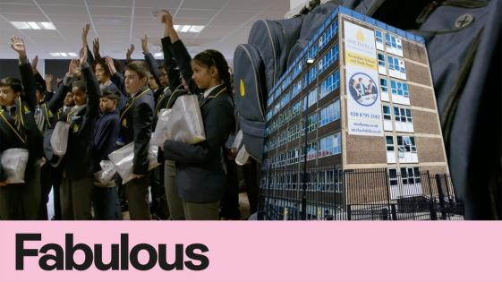
Discussion questions
- "Can a school be both extremely strict and genuinely loving at the same time?"
- "Do you think teachers are born great, or can strict training systems create excellent educators?"
- "Would you thrive in a school where teachers constantly push for higher standards?"
- "Will students from ultra-strict schools struggle with freedom in university or work?"
- "Does this system prepare students for real-life challenges, or just for following rules?"
- "If this school’s methods are so effective, why don’t all schools adopt them?"
- "Could this approach work in very different cultures or countries?"
A.Word Definitions (Match the words from the text to their meanings)
| a) Being on time |
Answer · 2.mich_def
2.mich_def
ANSWER Michaela A
Consistent→e; Detention→b; Expectations→d; Efficient→c; Punctuality→a
B. Fill in the Blanks
- "The school has high ______, so students must bring their equipment every day."
- "Teachers give ______ feedback to help each other improve."
- "______ is important because late students get a detention."(Answers: expectations, consistent, Punctuality)
Answer · 2.mich_blank
2.mich_blank
ANSWER Michaela B
expectations; consistent; Punctuality
C.Read 20 statements and decide if they are true or false.
- The school believes that high standards prevent students from being successful.
(False – They argue high standards help students succeed.) - Teachers at this school receive no training because they are expected to be naturally excellent.
(False – They undergo rigorous training and feedback.) - Detentions are given inconsistently, depending on the teacher’s mood.
(False – Rules are enforced consistently.) - The school prioritizes punctuality but does not punish lateness.
(False – Late students receive detentions.) - Silent corridors are implemented to reduce fights and distractions.
(True – The text mentions this as a reason.) - The school is located in an affluent area where students have few challenges.
(False – It’s in Brent, one of the poorest boroughs.) - Students are encouraged to avoid eye contact when speaking to adults.
(False – They’re taught to look at adults as a soft skill.) - The strict rules are meant to be mean rather than helpful.
(False – They’re described as purposeful, not mean.) - Teachers at this school never change their expectations for students.
(False – The text says teachers constantly push for higher standards.) - The school believes creativity is more important than discipline.
(False – Discipline is central to their philosophy.) - Students who forget their equipment face no consequences.
(False – They receive detentions.) - The school’s methods are universally accepted as the best by all educators.
(False – The text acknowledges not everyone agrees.) - Soft skills like eye contact are ignored in favor of academic skills.
(False – They’re explicitly taught.) - The school’s strictness extends to both behavior and academic performance.
(True – High expectations apply to both.) - New teachers at the school are already perfect and need no improvement.
(False – They undergo continuous development.) - The school’s environment is described as joyful despite its strictness.
(True – Love and support are emphasized.) - Fights and running in corridors are common problems at this school.
(False – Silent corridors prevent this.) - The school’s approach is designed to prepare students for future success.
(True – Soft skills and discipline are framed as life-prep.) - Students from this school struggle with independence in university.
(Not stated – Could be debated, but the text implies the opposite.) - The school’s philosophy is that children naturally dislike structure.
(False – They argue children thrive in structured love.)
Answer · 2.mich_tf
2.mich_tf
ANSWER Michaela C T/F (keys from the 0610 coursebook)
1F 2F 3F 4F 5T 6F 7F 8F 9F 10F 11F 12F 13F 14T 15F 16T 17F 18T 19 NS/F 20F
Lesson 3
SUMMERHILL
Reading
In the following text A.S.Neill describes his famous school, Summerhill, which he founded in
1921. Before you read, look at the pictures. In what ways do you think life at Summerhill is
different from life at a more traditional school?
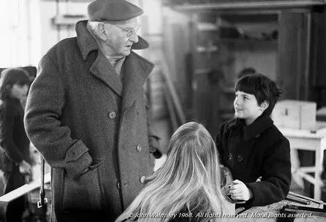
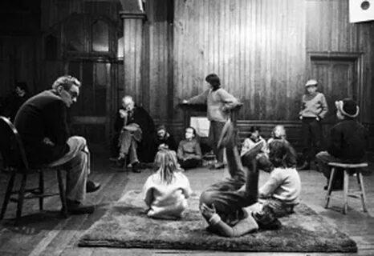
Now read the first part of the text paying attention to highlighted words.
THE IDEA OF SUMMERHILL
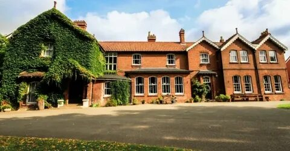
Summerhill began as an experimental school. It is no longer such; it is now a demonstration school, for it demonstrates that freedom works.
When my first wife and I began the school, we had one main idea: to make the school fit the child-instead of making the child fit the school.
Obviously, a school that makes active children sit at desks studying mostly useless subjects is a bad school. It is a good school for those who believe in such a school, for those uncreative citizens who want docile , uncreative children who will fit into a civilization whose standard of success is money.
I had taught in ordinary schools for many years. I knew the other way well. I knew it was all wrong. It was wrong because it was based on an adult conception of what a child should be and of how a child should learn.
Well, we set out to make a school in which we should allow children freedom to be themselves. In order to do this, we had to renounce all discipline, all direction, all suggestion, all moral training and religious instruction. We have been called brave, but it didn`t require courage. All it required was what we had- a complete belief in the child as a good, not an evil, being.
My view is that a child is innately wise and realistic. If left to himself without adult suggestion of any kind, he will develop as far as he is capable of developing. Logically, Summerhill is a place in which people who have the innate ability and wish to be scholars will be scholars; while those who are only fit to sweep the streets will sweep the streets. But we have not produced a street cleaner so far. Nor do I write this snobbishly, for I would rather see a school produce a happy street cleaner than a neurotic scholar.
What is Summerhill like?.....
Well, for one thing, lessons are optional. Children can go to them or stay away from them-for years if they want to. There is a timetable- but only for the teachers.
The children have classes usually according to their age, but sometimes according to their interests. We have no new methods of teaching, because we do not consider that teaching in itself matters very much. Whether a school has or does not have a special method for teaching long division is of no significance, for long division is of no importance except to those who do want to learn it. And the child who wants to learn long division will learn it no matter how it is taught.
Summerhill is possibly the happiest school in the world. We have no truants, and seldom a case of homesickness. We very rarely have fights-quarrels, of course, but seldom have I seen a stand-up fight like the ones we used to have as boys. I seldom hear a child cry, because children when free have much less hate to express than children who are downtrodden. Hate breeds hate, and love breeds love. Love means approving of children, and is essential in any school. You cannot be on the side of children if you punish them and storm at them. Summerhill is a school in which the child knows that he is approved of.
The function of the child is to live his own life-not the life that his anxious parents think he should live, nor a life according to the purpose of the educator who thinks he knows what is best. All this interference and guidance on the part of adults only produces a generation of robots.
In Summerhill, everyone has equal rights. No one is allowed to walk on my grand piano, and I am not allowed to borrow a boy`s cycle without my permission. At a General School Meeting, the vote of a child of six counts for as much as my vote does.
But, says the knowing one, in practice of course the voices of the grownups count. Doesn`t the child of six wait to see how you vote before he raises his hand? I wish he sometimes would , for too many of my proposals are beaten. Free children are not easily influenced; the absence of fear accounts for this phenomenon. Indeed, the absence of fear is the finest thing that can happen to a child.
3.1 Match the words with their definitions
- docile b) To give up or reject something formally
- renounce c) Students who skip school without permission
- innately d) Not required; voluntary
- neurotic b) To give up or reject something formally
- snobbishly e) Easily controlled or submissive
- optional f) An observable event or occurrence
- truants h) Unnecessary involvement in others' affairs
- interference i) In a way that shows superiority
- phenomenon j) Suffering from excessive anxiety or emotional instability
Answer · 3.1
3.1
ANSWER 3.1 (by meaning; letters in the file are jumbled)
docile=Easily controlled; renounce=give up formally; innately=born with; neurotic=excessive anxiety; snobbishly=superiority; optional=voluntary; truants=skip school; interference=unnecessary involvement; phenomenon=observable event
3.2.Comprehension questions. Try to use the new words from the previous task.
- What was the main idea behind starting Summerhill School?
- Why does the writer believe traditional schools are "wrong"?
- What does the writer mean by saying Summerhill is a "demonstration school"?
- How does Summerhill treat the concept of discipline and moral training?
Answer · 3.2
3.2
ANSWER 3.2 (Summerhill — comprehension)
1. Main idea: make the school fit the child, not force the child into school frames; give children freedom to be themselves.
2. Traditional schools are “wrong” because they rest on adult ideas of what a child should be and how a child should learn; they make active children sit at desks studying mostly “useless” subjects.
3. A “demonstration school” is no longer an experiment — it shows (demonstrates) that freedom works.
4. They formally renounced discipline, direction, moral training and religious instruction; they rely on the belief that a child is innately wise and realistic.
3.3 Complete the sentences with the correct word from the list.
Words: docile, renounce, innately, neurotic, snobbishly, optional, truants, interference, phenomenon
- The teacher was pleased with her __________ students, who followed instructions without complaint.
- After years of conflict, the king decided to __________ his claim to the throne.
- Some people are __________ talented in music, showing skill from a very young age.
- His __________ behavior made it difficult for others to relax around him.
- She looked down __________ on those who didn’t share her expensive tastes.
- Attendance at the workshop is __________, so you don’t have to go if you’re busy.
- The school has strict policies to deal with __________ who skip classes regularly.
- The bad weather caused __________ with the satellite signals.
- The Northern Lights are a natural __________ that attracts many tourists.
Answer · 3.3
3.3
ANSWER 3.3
docile; renounce; innately; neurotic; snobbishly; optional; truants; interference; phenomenon
3.4 Read the text and decide whether statements 1-10 are true (T) or false (F).
- Summerhill was originally founded as a traditional school but later became experimental.
- The main idea behind Summerhill was to make children adapt to the school’s rules.
- The school believes that children are naturally wise and realistic if left alone.
- At Summerhill, all lessons are mandatory, and students must attend them.
- The school has a strict disciplinary system to ensure students behave properly.
- The writer would prefer a happy street cleaner over a stressed but highly educated scholar.
- In school meetings, teachers’ votes have more weight than students’ votes.
- The writer claims that free children are easily influenced by adults.
- Summerhill frequently has serious fights among students because of the lack of rules.
- The absence of fear is considered one of the best outcomes for a child at Summerhill.
Answer · 3.4
3.4
ANSWER 3.4 T/F
1F 2F 3T 4F 5F 6T 7F 8F 9F 10T
3.5 Watch the video and answer the questions. https://youtu.be/f-2fHVnOpmQ?si=JKn6w4b1o-3d-JPe
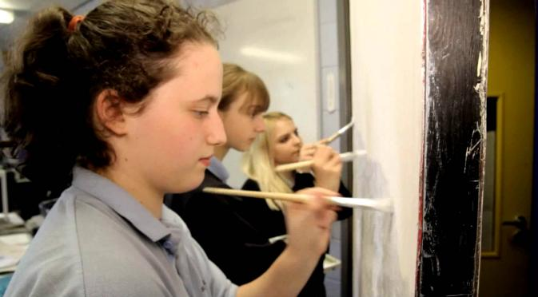
Discussion Questions (Critical Thinking & Debate)
1."Summer Hill prioritizes 'success through caring,' while strict schools like “Michaela” focus on discipline. Which approach better prepares students for adulthood, and why?"
2."Does “lots of choice and variety” risk lowering academic standards?"
3."Students praise easy computer access. Is unrestricted tech use in schools beneficial, or does it hinder focus?"
"An alumna became a teacher at Summer Hill. How influential are school role models in shaping career paths?"
Match the Halves:
1.The buddy scheme helps new students... 2.If teachers hadn’t been so supportive,... 3.Summer Hill invests in technology... 4.Structured lessons combined with fun... 5.Success through caring means... | a) ...the alumna might not have returned as a teacher. |
Answer · 1-d, 2-a, 3-b, 4-e, 5-c
1-d, 2-a, 3-b, 4-e, 5-c
Answer · 3.match
3.match
ANSWER Match the Halves
1-d 2-a 3-b 4-e 5-c
Instructions: Fill in each gap with ONE appropriate word. The first letter is given for guidance.
Summer Hill's motto is "Success Through C______ (1)," which they achieve by combining f______ (2), varied lessons with clear structure. Students appreciate the abundant r______ (3) available, particularly in IT - they can access computers during b______ (4) time or whenever needed. The science department stands out for its c______ (5) experiments, while music offers opportunities like choir and annual p______ (6).
The school invests not only in students but also in s______ (7) development. One teacher noted how this investment helps m______ (8) student potential. Former pupils often return as staff members, like the alumna who became a math teacher and credited the school's s______ (9) environment for shaping her career.
New students benefit from the b______ (10) scheme, which helps them integrate by connecting them with p______ (11). The school also emphasizes charity work and creates a s______ (12) atmosphere where everyone feels welcome. As one student summarized: "We're actively e______ (13) to participate, which makes learning enjoyable."
Answer · ·
1.Caring 2.fun3.resources4.break 5.cool 6.productions 7.staff 8.maximize 9.supportive10.buddy11.peers 12.safe 13.encouraged
GRAMMAR
Comparative Grammar Rules: Present Simple vs. Present Continuous
Here’s a clear breakdown of the key differences between the Present Simple and Present
Continuous tenses, including rules, uses, and signal words.
1. Present Simple
Form:
- Affirmative: Subject + base verb (add -s/-es for he/she/it)
- She works at a school.
- Negative: Subject + do/does not + base verb
- They don’t like strict rules.
- Question: Do/Does + subject + base verb?
- Does Summerhill allow freedom?
Uses:
✅ Habits & routines (regular actions)
- Children go to classes if they want.
✅ General truths & facts - Freedom works at Summerhill.
✅ Permanent situations - Neill believes in children’s wisdom.
✅ Scheduled events (timetables, programs) - The meeting starts at 10 AM.
Signal Words:
always, usually, often, sometimes, never, every day/week, on Mondays
2. Present Continuous
Form:
- Affirmative: Subject + am/is/are + verb-ing
- The kids are playing outside now.
- Negative: Subject + am/is/are not + verb-ing
- She isn’t attending class today.
- Question: Am/Is/Are + subject + verb-ing?
- Are the teachers discussing new rules?
Uses:
✅ Actions happening now (at this moment)
- Look! A child is climbing a tree.
✅ Temporary situations (not permanent) - This week, some students are trying new subjects.
✅ Future arrangements (planned events) - Next Monday, we are visiting a museum.
✅ Changing trends - More schools are adopting free learning methods.
Signal Words:
now, at the moment, currently, today, this week, look!, listen!
Key Differences
Aspect | Present Simple | Present Continuous |
|---|---|---|
Time Reference | General, habitual, timeless actions | Now, temporary, ongoing actions |
Example | Children choose their lessons. | A child is choosing a book now. |
State Verbs | Used with like, know, believe, want | Not used with most state verbs |
Future Meaning | For schedules (The train leaves at 5) | For personal plans (I am meeting her) |
Common Mistakes to Avoid
❌ Incorrect: She is believing in freedom. (Believe = state verb)
✅ Correct: She believes in freedom.
❌ Incorrect: I am usually going to bed early. (Habit = Present Simple)
✅ Correct: I usually go to bed early.
❌ Incorrect: The sun is rising in the east. (Fact = Present Simple)
✅ Correct: The sun rises in the east.
Practice Exercise
Choose the correct tense (Present Simple or Present Continuous):
- Summerhill is / is being a unique school.
- Right now, the students discuss / are discussing new rules.
- Neill thinks / is thinking children learn best when free.
- This term, more kids join / are joining the art class.
- The meeting starts / is starting at 3 PM every Friday.
Answer ·
- is (fact)
- are discussing (now)
- thinks (opinion)
- are joining (temporary trend)
- starts (scheduled event)
HOME ASSIGNMENT
Answer · 3.gaps
3.gaps
ANSWER gaps
Caring; fun; resources; break; cool; productions; staff; maximize; supportive; buddy; peers; safe; encouraged
3.5: Fill in the blanks with the correct words from the text.
- Summerhill is a __________ school where children have the freedom to choose whether to attend lessons.
- The school believes that children are __________ wise and realistic if left to themselves.
- The writer would rather see a happy street cleaner than a __________ scholar.
- At Summerhill, discipline and moral training are completely __________.
- The school rarely has fights because free children have less __________ to express.
Grammar Exercises
Answer · 3.5
3.5
ANSWER 3.5 HA
demonstration; innately; neurotic; renounced/rejected; hate
3.6 .Rewrite the sentences using the correct tense (Present Simple/Continuous) and justify your choice .
- The school (operate) on the principle that children (thrive) when granted autonomy.
- While most educators (adhere) to strict curricula, Summerhill staff (observe) how students naturally engage with learning.
- Current research (demonstrate) that self-directed learning (yield) better long-term retention than forced instruction.
Answer · 3.6
3.6
ANSWER 3.6 tenses
1 operates / thrive
2 adhere / are observing (or observe)
3 demonstrates / yields
3.7: Stylistic Tense Transformation * Trajectory 4
Convert these sentences to make them more academically sophisticated by:
a) Using passive voice
b) Adding modal verbs
c) Incorporating participle clauses
- Students choose their classes freely at Summerhill.
- Teachers don’t force children to follow schedules.
- The school is challenging traditional educational norms.
Answer · 3.7
3.7
ANSWER / sample 3.7
Classes are freely chosen…; Children are not forced…; Traditional norms are being challenged…
3.8: Critical Synthesis* Trajectory 4
Combine these ideas into one sophisticated sentence using both tenses and concessive clauses(although, while):
- Summerhill rejects standardized testing (general policy)
- Most schools are increasing testing frequency (current trend)
- Research shows testing harms creativity (fact)
→ "While most schools are increasingly implementing standardized testing, Summerhill consistently rejects this approach, given that research demonstrates testing’s detrimental effect on creativity."
Answer · 3.8
3.8
ANSWER 3.8 — sample already in the coursebook (While most schools…).
3.9 Fill in the blanks with the correct prepositions (in, at, of, to, for, with, without, by, on, from). Some may be used more than once.
- Summerhill began as an experimental school, but it is now a demonstration school ______ freedom.
- The founders wanted to make the school fit the child—instead ______ making the child fit the school.
- The school is good ______ those who believe ______ uncreative, docile children.
- Traditional schools are based ______ an adult conception ______ what a child should be.
- Summerhill allows children freedom to be themselves ______ adult interference.
- The writer believes children are innately wise if left ______ themselves.
- Lessons are optional—children can stay away ______ them ______ years.
- The timetable is only ______ the teachers, not the students.
- The writer would rather see a happy street cleaner ______ a neurotic scholar.
- ______ Summerhill, everyone has equal rights.
- No one is allowed to walk ______ the grand piano.
- The vote ______ a six-year-old counts as much as the teacher’s.
- Free children are not easily influenced because ______ the absence ______ fear.
- The writer claims that too many ______ his proposals are beaten ______ meetings.
- A child’s function is to live his own life, not the life his parents think he should live ___
Answer · 3.9
3.9
ANSWER 3.9 prepositions
of/for; of; for/in; on/of; without; to; from/for; for; than; At; on; of; of/of; of/at; (for him)
Exercise 3.10: Complete the sentences with the correct phrasal verb.
give up look after grow up stand up for fall behind
- At Summerhill, children are encouraged to __________ their own rights.
- If a student doesn’t attend classes, they might __________ in their studies.
- The school doesn’t believe in forcing children to __________ their freedom.
- Teachers __________ the students but don’t control them.
- The writer believes children who __________ in freedom become happier adults.
Answer · 3.10
3.10
ANSWER 3.10
stand up for; fall behind; give up; look after; grow up
Exercise 3.11: Rewrite the sentences using phrasal verbs.
(Use: break free from, come up with, run by, turn away from, stick to)
- The school rejects traditional teaching methods.
- Students can choose whether to follow the rules or not.
- The teachers present new ideas at meetings.
- A child’s vote is as important as a teacher’s.
- Summerhill helps children escape rigid education system
Answer · 3.11
3.11
ANSWER 3.11
turn away from; stick to; come up with / run by; run by (equal votes); break free from
3.12 Categorizing modifiers
11 .Sort these 12 modifiers into the correct columns:
extremely • quite • slightly • absolutely • rather • pretty
completely • fairly • totally • a bit • really • somewhat
Strong Modifiers | Medium Modifiers | Weak Modifiers |
____________________ | ____________________ | __________________ |
____________________ | ____________________ | __________________ |
____________________ | ____________________ | __________________ |
____________________ | ____________________ | __________________ |
____________________ | ____________________ | __________________ |
Answer · 3.12
3.12
ANSWER 3.12
Strong: extremely, absolutely, completely, totally, really
Medium: quite, rather, pretty, fairly
Weak: slightly, a bit, somewhat
Part 3.13: Sentence Creation
Write sentences about school life using each type of modifier:
- Strong: ______________________________________________________
(Example: "Exams are completely stressful.") - Medium: _____________________________________________________
(Example: "Homework is fairly easy this week.") - Weak: _______________________________________________________
(Example: "I'm slightly tired after class.")
3.14 Extension Activity*:
Discussion Questions (using modifiers):
- Do you think Summerhill is extremely progressive or somewhat unusual? Why?
- Are traditional schools fairly strict or completely inflexible? Explain.
- Should children have totally free choices, or just a bit more freedom?
3.15 Write 3 sentences about education using one modifier from each column:
- (Strong): ________________________________________________________
Example: "Summerhill is absolutely different from traditional schools." - (Medium): _______________________________________________________
Example: "The rules are rather flexible compared to other places." - (Weak): _________________________________________________________
Example: "Some parents are slightly worried about the lack of tests."
Summerhill School is still operating! Founded in 1921 by A.S. Neill, it remains one of the world's oldest and most famous democratic free schools, where students have equal say in school rules and choose whether to attend classes.
Key Facts About Summerhill Today:
- Location: Leiston, Suffolk, England (same as original).
- Status: Still running as an independent, co-educational boarding school.
- Philosophy: Maintains its core principles of self-directed learning, democracy, and child autonomy.
- Inspection: Recognized by UK authorities (though it has faced debates over its unconventional methods).
- Students: Around 70-100 pupils, aged 5–18, from various countries.
Speaking skills
Discussion Questions
1. Debate: "Freedom vs. Structure in Education"
Instructions:
- Divide students into two groups: Team Freedom (supports Summerhill’s approach) and Team Structure (supports traditional schools).
- Each team must argue their position using ideas from the text and phrasal verbs (e.g., break free from, stick to, turn away from).
Sample prompts:- "Children should give up rigid schedules to develop naturally."
- "Without rules, students will fall behind academically."
3. Discussion Circle: "Would You Thrive at Summerhill?"
- "Could you go to only the classes you like, or would you fall behind?"
- "How would you account for the school’s success with no discipline?"
- "Would you stand up for this system if your parents disagreed?"
Extension: Students vote "Yes/No" and justify answers using phrasal verbs (e.g., "I’d stick to a timetable because I’d grow up undisciplined otherwise").
4. Persuasive Speech: "A School for the Future"?Task: Students design their ideal school and present it using:
- 3 phrasal verbs (e.g., do away with, look up to, set up).
- 3 vocabulary words from the text (e.g., docile, innate, interference).
Example: "My school would do away with grades because children are innately curious."
5. Agree/Disagree: Controversial Statements
Read each statement aloud. Students move to "Agree" or "Disagree" sides of the room and debate.
Statements:
- "Children left to themselves will turn into lazy adults."
- "Schools should bring up students to fit into society’s expectations."
- "Happy street cleaners count for more than neurotic scholars."
Russian term | AmE | BrE |
преподаватели | faculty | academic staff |
факультет | college | faculty |
неакадемический персонал | staff | non-academic staff |
аспирант | graduate student | postgraduate student |
общежитие | residence hall/ dormitory | hall of residence(halls) hostel |
заведующий кафедрой | department chairperson | head of department |
Lesson 4
Vocabulary: Match the words and phrases in column A with their definitions in column B
Column A (Words/Phrases)
| Column B (Definitions) |
Answer · ·
1-J, 2- (Note: "Semi-independent" is missing a definition; suggest "partially self-directed"),
3-I, 4-G, 5-L, 6-H, 7-B, 8-F, 9-C, 10-M,
11-E, 12-D, 13-A, 14-N, 15-O, 16-P, 17-Q, 18-R, 19-K, 20-T,
21-U, 22-Q, 23-V, 24-S, 25-W, 26-X, 27-Y, 28-Z, 29-AA, 30-BB.
Exercises
Answer · 4.vocab
4.vocab
ANSWER 4 vocab (check the coursebook key if present; typical matches)
Collegiate research↔mentor research; Excel↔be exceptionally good; Quadrangle↔courtyard; Tutor↔small-group instructor; Don↔Oxford/Cambridge professor; Credits↔course units; Dissertation↔long essay for degree; Thesis↔doctoral treatise; Tutorial↔small-group session; Halls of residence↔student housing…
Find words and phrases that refer to:
1 a university department that deals with new applications and new students 2 qualifications that are needed to enter a programme 3 money that students can receive 4 money that students have to pay for their course 5 money that a student borrows to pay for their course 6 money that is given to a student to pay for a course (usually for students who are doing well at school) 7 an organization that deals with student issues and student life on campus, and a place where students can meet.
University studies in Great Britain
Students who attend university in the UK start with undergraduate studies, which are usually the studies towards a bachelor’s degree [a first degree at university]. They follow a programme of different modules [parts of the university course]. They usually have to complete a certain number of credits each year. For example, if the students need 180 credits, they might take two modules of 60 credits each, and their dissertation [long piece of writing] might be worth another 60 credits. When they have graduated [completed their bachelor’s degree], students become graduates. If they want to continue their university education, students can begin postgraduate studies. The first stage of this would be a master’s degree, and after that they can do a PhD (doctor of philosophy) [the highest university degree]. Postgraduate studies require students to specialise in a particular field, and they often do research. They usually have to write another dissertation (for a master’s degree)or a thesis (for a PhD).
People, places, and types of classes
A university campus A lecture theatre A tutorial
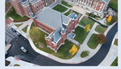
If you visit a university campus, you’ll see a lecture theatre (or a lecture hall). During lectures, students listen to a lecturer and take notes. Some modules have seminars where smaller groups discuss the subject in detail. The academic staff [people who teach] might also include tutors, who teach students individually or in small groups, in sessions called tutorials. Many students live on campus in halls of residence (or halls).
Student services
Admissions Funding Tuition Student Union
To apply for one of our postgraduate programmes, check the entry requirements on the
programme page. Then click here to submit your application.
Fees should be paid at the beginning of the academic year. To apply for a student loan or a scholarship click here.
OXFORD
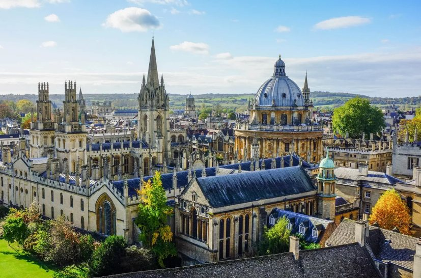
University of Oxford – General Information
Founded: 1096 (oldest university in the English-speaking world)
Location: Oxford, England
Type: Public collegiate research university
Colleges: 39 semi-independent colleges (e.g., Christ Church, Balliol, Magdalen)
Students: approximately 26,000 (undergraduate & postgraduate)
Key Features:
- Teaching: Tutorial-based (small-group learning).
- Reputation: Ranked among the world’s top universities, excelling in Humanities, Law, Medicine, Politics, and Sciences.
- Notable Alumni: 28 UK Prime Ministers (e.g., Boris Johnson, Margaret Thatcher), J.R.R. Tolkien, Stephen Hawking, Malala Yousafzai.
- Traditions: Formal halls, academic gowns, May Morning celebrations, and the Oxford-Cambridge rivalry (Boat Race).
- Architecture: Historic "dreaming spires," medieval libraries (Bodleian), and iconic sites like the Radcliffe Camera.
- Harry Potter Link: Christ Church’s dining hall inspired Hogwarts’ Great Hall.
Oxford blends centuries-old tradition with cutting-edge research, making it one of the most prestigious universities globally.
- You are going to listen and read the first part of the letter from Oxford. Discuss the questions which are given at the end of it with a partner.
Answer · 4.find
4.find
ANSWER Find words
Admissions; entry requirements; funding; tuition/fees; loan; scholarship; Student Union
A LETTER FROM OXFORD
I want to tell you about the most pleasant time I have had since I came to England. John, Mr. Priestley’s son, invited me to Oxford for a weekend. He’s an undergraduate there. He loves Oxford and seems to know all about it. He met me at the station and took me to the “guest room” at his college where I was to stay during my visit. Then we went to his rooms. They are on the one side of the “Quad” (quadrangle) up a little narrow stairway with the number of his room and his name, “47, J. Prestley”, painted neatly on the wall in white letters. He has a big study, with a desk, bookcase (with lots of books in it), armchairs, cupboards, reading lamp, and some pleasant drawings of Oxford on the walls. It looked very comfortable, I must say. He has also a bedroom and a tiny kitchen where he can make tea or coffee if he has friends in his rooms. He took wine glasses from the cupboard and we had a glass of cherry and then went out to see Oxford. Hearly all the students are on vacation just now but we saw a few of them about. They were wearing black gowns and queer-looking caps, not at all like the caps that our students at Upsala or Lund wear. Some of the gowns looked very old and even rather ragged, and I asked John if these students were very poor and couldn’t afford new gowns. He laughed and said that undergraduates, especially those who had just come up, tried to get old, torn-looking gowns so that people would think they had been in Oxford for years. One student passed us, looking rather worried and wearing a black suit under his gown, a white collar and a white bow-tie. John said they had to wear that dress when they were taking examination, and that unhappy-looking student was either going to or coming from the examination room. We went into some of the colleges, through the quadrangle and gardens and into the dining-halls. Most of the halls are wonderful, especially the hall of Christ Church. This is the biggest, at least as far as buildings are concerned, and perhaps, the most magnificent of the colleges. Its chapel is the Cathedral of Oxford; this is a much older building than the college and had originally been an abbey, the Abbey of St. Frideswide. St. Frideswide is a Saxon saint who died in A.D. 750 and is buried under the floor of the Cathedral.
- What details about John’s rooms in Oxford made them seem comfortable and welcoming?
- Why do some Oxford undergraduates prefer to wear old, ragged gowns instead of new ones?
- How did the student dressed in a black suit, white collar, and bow-tie reflect the pressures of Oxford life?
- What historical significance does Christ Church hold, based on its connection to St. Frideswide?
- If you could visit Oxford again, would you prefer to go during term time or vacation? Why?
Answer · 4.ox1
4.ox1
ANSWER — Letter from Oxford, part 1
1. John has a large study with a writing desk, bookcase, armchairs, a lamp and Oxford drawings; a bedroom and a tiny kitchen for tea/coffee; he offered cherry. It looks cosy and welcoming.
2. New students deliberately wear old/torn gowns so they look as if they have already been at Oxford for a long time.
3. Black suit, white collar and bow — exam dress; the anxious look shows exam pressure at Oxford.
4. Christ Church chapel is Oxford’s cathedral; it was once St Frideswide’s abbey (Saxon saint, d. 750); she is buried under the cathedral floor.
5. Sample opinion: in term time — a lively city, societies, lectures; in vacation — quieter, easier to look at the colleges. (Your choice + why.)
Now read the second part of it and discuss the questions with a partner.
The college was founded by Cardinal Wolsey in the 16th century. His hat and his chair are there in the college, but before Wolsey could finish the college he fell from power and died in disgrace and the building was completed by King Henry VIII. All round the hall are portraits of the great men who have been members of the college: Wolsey himself, Sir Philip Sidney, William Penn (who founded Pennsylvania), John Wesley, John Locke, Ruskin, Sir Robert Peel, Gladstone, Sir Anthony Eden (Christ Church gave England five Prime Ministers in a single century), and a great many other famous people. These men are merely from one college – and there are thirty eight other colleges. So there are many other great names connected with Oxford: Shelley, Dr. Johnson, Sir Christopher Wren, Dr. Arnold and his son (the poet Matthew Arnold), Cecil Rhodes, Gibbon, and dozens of others. I should think nearly every great man in England must have been at Oxford, though John admitted that a few had been at Cambridge. One of the portraits of Christ Church that interested me very much was that of Charles Dodgson, better known as “Lewis Carroll”, the writer of the most delightful of all children’s books, Alice in Wonderland. Alice belongs to Oxford, for it was told to the little daughter of Liddell, Dean of Christ Church, during and excursion up the river to Godstow, and I think it is characteristic of the old things you meet with in Oxford that it was written, not by a typical “children’s author”, but by a lecturer in mathematics at Oxford. There is a story that Queen Victoria was so charmed with Alice in Wonderland that she gave orders that the next book by this writer should be sent to her. In due course it arrived, and was: The Condensation of Determinants, a new and brief method of computing Arithmetical Values.
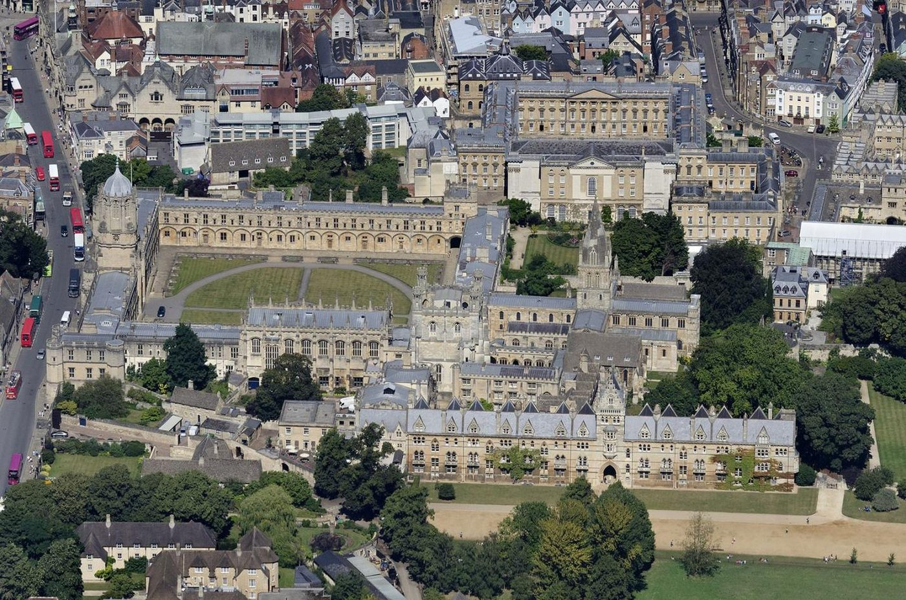
The photo of the Christ Church College
- Who originally founded the Christ Church College and why was he unable to complete it?
- Name at least three famous alumni of Christ Church and their contributions to history or culture.
- How does the anecdote about Lewis Carroll and Alice in Wonderland reflect Oxford’s unique character?
- Why might Queen Victoria have been surprised when she received Charles Dodgson’s second book?
- The text claims that "nearly every great man in England must have been at Oxford." Do you think this is an exaggeration? Why might Cambridge disagree?
Answer · 4.ox2
4.ox2
ANSWER — Letter from Oxford, part 2
1. Founded by Cardinal Wolsey (16th c.); unfinished because he lost power and died in disgrace; completed by Henry VIII.
2. Sample alumni: William Penn (Pennsylvania); John Wesley (Methodism); Gladstone / Peel / Eden (PMs); John Locke (philosophy); Lewis Carroll / Dodgson (Alice). Any three with their contribution is enough.
3. Alice was told to the dean of Christ Church’s daughter on the river; the author was not a “children’s writer” but a maths lecturer → typical Oxford mix of learning and unexpected stories.
4. The Queen expected a sequel to Alice, but got a maths book (The Condensation of Determinants).
5. Sample: yes, exaggeration — John admits some great people studied at Cambridge; Cambridge would disagree out of Oxbridge rivalry.
3. The third part contains a dialogue between the author of the letter and his friend. Read it to yourselves and discuss in groups the questions at the end of it.
While we were talking, a scholarly-looking man in a cap and gown walked past and smiled at John. As he walked away I said: “Surely he’s not an undergraduate”.
John: No, he is my tutor.
Olaf: What is a tutor?
John: The Tutorial System is one of the ways in which Oxford and Cambridge differ from all the other English universities. Every student has a tutor and as soon as you come to Oxford one of the first things you do is to go and see your tutor. He, more or less, plans your work, suggests the books you should read and sets work for you to do, for example an essay to write. Each week you go to him in his rooms, perhaps with two mor three other students, and he discusses with you the work that you have done, criticizes in detail your essay and sets you the next week’s work.
Olaf: Does the tutor also give lectures?
John: Yes, he may.
Olaf: But aren’t lectures given by the professors?
John: Yes, though professors don’t give great many lectures. They are often appointed not so much to do teaching work as to carry on research in their particular subjects.
Olaf: Can you go to any lecture you like, no matter whether it is by a tutor or professor of your college or not?
John: Yes. Lectures are organized not by the colleges but by the university, and so any member of the university may attend, for all students are members of a college and of the university. The results is that where you get a famous professor, like, say, Lord David Cecil, who lectures in English Literature, you will often find that his lecture-room is crowded; a dull professor may have only a handful of students.
Olaf: You said that lectures were “organized by the university”. Where is the university?
John: It must seem rather strange to you but there isn’t really any university at Oxford as there is, for example, at Manchester or Bristol or Edinburg. Oxford (like Cambridge) is a collection of colleges, each self-governing and independent. “The University” is merely an administrative body that organizes lectures, arranges examinations, gives degrees, etc. The colleges are the real living Oxford and each has its own character and individuality. For example, most of the men at Queen’s College come from the North of England, those at Jesus College from Wales. Brasenose has a high reputation for its rugger, Magdalen for its rowing men. But remember that there are students of all kind in each college; I mean you don’t get all science students at one college, all law students at another. Every college has its arts men and its science men, its medical students and its engineers. Every student, of course, follows his own course of study, but he gains a lot from living among those who represent all other branches.
Olaf: I saw in the porch of one college some notices about “Societies”; there seemed to be quite a lot of societies.
John: There are dozens of them: dramatic societies, language clubs, philosophy societies, rowing, boxing, political clubs of all colours, cinema clubs, - clubs, in fact, for almost every activity under the sun. Each society arranges for a leading expert in his subject to come and talk to its members. So in term time you get a regular stream of politicians, musicians, poets, painters, film-producers and so on. In a way think we probably get more out of talking and listening at this clubs and societies than from any other side of university life. The best-known society, I suppose, is the Union, a debating club – a sort of training ground for our future statesmen. The next time you come to Oxford you must come in term time and I’ll take you to one of the debates. You will hear some attempts – not always very successful – by young speakers to be witty. But you’ll hear, too, some first-class debating; and if you look round the walls of the Union at the photographs there, you will see a number of our greatest statesmen were once “President of the Oxford Union”.
Olaf: There’s another tutor, I suppose, that mat in a cap and gown with those two men in a bowler hats behind him.
John: No, he’s a proctor. And the two men behind him are “bull-dogs”. The proctor’s job is to keep discipline, to see that students aren’t out after midnight, or aren’t driving car without having first received permission from the proctor.
Olaf: What punishment can the proctor give?
John: Students can be fined a sum of money, or, for a very serious offence, they can be expelled.
Olaf: And the “bull-dogs”, what are they for?
John: They are to catch the student if he tries to run away before his name can be taken.
Olaf: By the way, what are you studying? It’s medicine, isn’t it? You’re going to be a doctor.
John: As a matter of fact, I’m not. That was the idea when I came here, but my interests has always been in language learning and language teaching and I so changed from medicine to modern languages. I’m in my last year now.
Olaf: What do you want to do when you leave Oxford?
John: What I should like more than anything else would be to start a school in Oxford for teaching English to foreign students. And if I could get some Olafs and Jans and Friedas there, I should be very happy.
Olaf: I think they’d be very happy, too, to study English in Oxford. Well, I wish you luck.
John: Thanks, Olaf. But let’s walk on again; you’ve hardly seen any of the colleges yet.
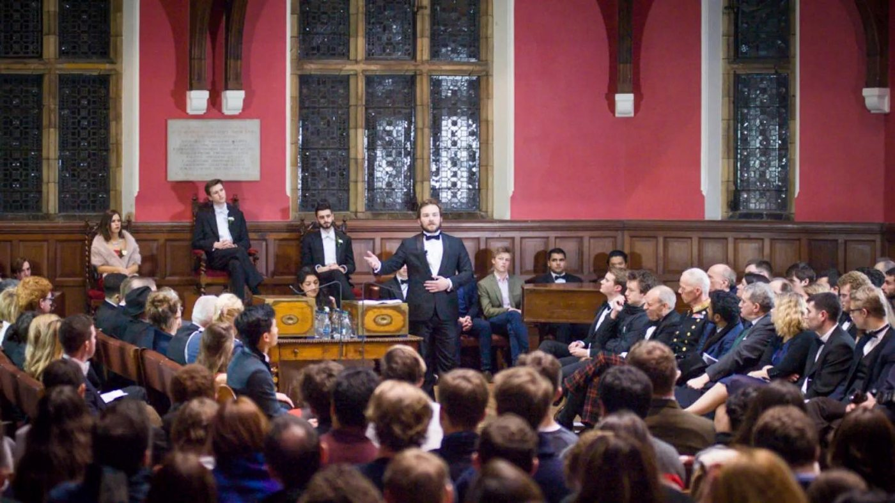
This is a photo of the Oxford Union Society sitting.
- What are the two main roles of a tutor in Oxford's tutorial system?
- How does the lecture system at Oxford differ from how lectures are organized at other universities?
- What three functions does "the University" serve as an administrative body?
- Why might Oxford's tutorial system be considered more effective than standard lecture-based learning?
- How does the college system at Oxford create both specialization and diversity among students?
- What does the anecdote about Lord David Cecil's popular lectures suggest about academic reputation at Oxford?
- How does the role of professors at Oxford differ from professors at other universities based on this description?
- In what ways do Oxford's student societies resemble and differ from extracurricular activities at other universities?
- What can you infer about Oxford's disciplinary system from the description of proctors and "bull-dogs"?
- Why might John emphasize that "every college has its arts men and its science men"?
- Would you prefer Oxford's tutorial system or traditional lectures? Why?
- Which Oxford society mentioned would interest you most and why?
- What is the significance of students wearing different colored carnations during exams?
- Why does John mention that Brasenose is known for rugby while Magdalen is known for rowing?
- What does the Union's role as a "training ground for future statesmen" suggest about its importance?
Answer · 4.ox3
4.ox3
ANSWER — Letter from Oxford, part 3 (tutor / University)
1. Tutor: plans the work, recommends books, sets essays; each week discusses the work, criticises the essay and sets the next one.
2. Lectures are organised by the University, not the college — you may go to any university lecturer; famous ones fill halls, dull ones get a handful.
3. The University as an administrative body: organises lectures and exams, awards degrees.
4. Tutorials are more effective than lectures: small groups, personal essay feedback, an individual work plan.
5. Each college has its own “character” (Queen’s — the North, Jesus — Wales; Brasenose — rugby, Magdalen — rowing), but inside a college you mix arts and science → course specialisation plus diverse neighbours.
6. Lord David Cecil: a lecturer’s reputation fills the room — academic fame matters.
7. Professors do more research and few lectures; tutors handle regular teaching.
8. Societies are like clubs (drama, sport, politics), but in term they often invite outside experts; the Union is debating “for future politicians”.
9. The Proctor enforces discipline (after midnight, a car without permission); fine or sending down; “bull-dogs” catch runaways to take their name.
10. Stresses that a college is not “only physicists” or “only lawyers”; you live among different subjects.
11. Sample opinion: tutorials go deeper; lectures give a wider overview. (Your choice.)
12. Sample: Union / dramatic / rowing — whichever interests you.
13. Coloured carnations at exams are not explained in detail in this letter. Typical Oxford tradition: white / pink / red carnation marks the exam stage (firsts → finals).
14. Shows colleges’ individuality and sporting fame.
15. The Union trains public speaking and politics — many future statesmen were Presidents of the Union.
You will hear the first part of the debate on racism in British education held in the famous Oxford Union Society.
ABOUT THE OXFORD UNION SOCIETY: The Oxford Union is the world's most prestigious debating society, with an unparalleled reputation for bringing international guests and speakers to Oxford. Since 1823, the Union has been promoting debate and discussion not just in Oxford University, but across the globe.
British Education Does Perpetuate Racism | Sabriyah Saeed | Part 1 of 6
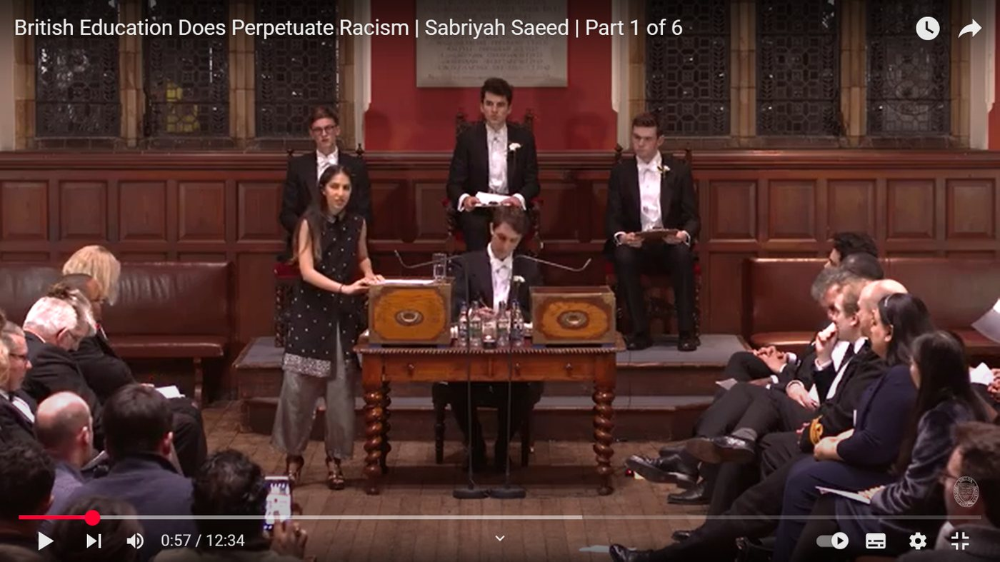
GRAMMAR
Present Perfect vs. Present Perfect Continuous
Key Differences
Aspect | Present Perfect | Present Perfect Continuous |
|---|---|---|
Focus | Completed actions with results in the present | Ongoing/duration of an action (still happening or recently stopped) |
Form | Have/Has + past participle (e.g., has excelled) | Have/Has + been + -ing (e.g., has been researching) |
Used with | State verbs (know, believe), completed actions | Action verbs (research, study), emphasis on duration |
Signal Words | Just, already, yet, ever, never, recently | For, since, all day/week, how long |
Exercise 1: Choose the Correct Tense
Fill in the blanks with Present Perfect or Present Perfect Continuous.
- The university __________ (foster) a culture of cutting-edge research for decades.
- Dr. Smith __________ (supervise) postgraduate students since 2015.
- The alumni __________ (donate) over $1 million to the chapel renovations.
- She __________ (work) on her dissertation all semester.
- The academic staff __________ (publish) three papers this year.
Answer ·
- has fostered (long-term result)
- has been supervising (duration)
- have donated (completed action)
- has been working (ongoing effort)
- has published (completed achievement)
Exercise 2: Rewrite the Sentences
Convert these sentences from Present Perfect to Present Perfect Continuous (or vice versa) where possible.
- The don has worn a bowler hat to every lecture. (Emphasize duration?)
→ The don has been wearing a bowler hat to every lecture. - Undergraduates have lived in halls of residence since September. (Keep as is?)
→ ✅ (Present Perfect for ongoing situation) - The tutor has set the work for the seminar. (Can’t convert—completed action)
- Researchers have collaborated on this thesis for two years.
→ Researchers have been collaborating on this thesis for two years.
Exercise 3: Error Correction
Correct the mistakes in tense usage.
- ❌ The academic staff has been knowing about the issue since last week.
- ❌ She has written her Master’s thesis all month.)
- ❌ The university has been awarding 500 Bachelor’s degrees this year.
Exercise 4: Create Your Own Sentences
Use the given words to write 2 sentences (1 Present Perfect, 1 Present Perfect Continuous).
Example:
- Credits:
- PP: I have earned all my credits for this semester.
- PPC: I have been struggling with these credits for weeks.
Try these words:
- Cutting-edge research
- Lecture theatre
- Dissertation
Final Tips
- Use Present Perfect for:
- Achievements (The team has completed the project).
- Life experiences (He has tutored in three countries).
- Use Present Perfect Continuous for:
- Unfinished actions (They have been studying all night).
- Temporary situations (She has been living on campus this term).
HOME ASSIGNMENT
GRAMMAR Present Perfect vs. Present Perfect Continuous
1 Fill in with the correct form (PP or PPC):
- The dean ___________ (approve) the new seminar series.
- Undergraduates ____________ (struggle) with these credits all term.
- We ____________ (attend) every lecture in this module.
- The lab ____________ (conduct) cutting-edge research since 2020.
- Alumni ___________ (donate) £50,000 to the library fund.
2 Correct the tense errors:
- ❌ The tutor has been setting the work since 9 AM this morning.
- ❌ They have submitted their theses for two months.
- ❌ The don has been knowing about this issue since February.
3 Complete the paragraph:
"The Physics department (1) ___________ (attract) top researchers recently. Dr. Lee (2) ___________ (lead) the quantum computing project since January. Students (3) ____________ (complain) about the outdated lab equipment, but the university (4) ___________ (not allocate) funds yet. The team (5) _____________ (wait) for new microscopes for months."
_____________________________________________________________________________________
Keys: 1) has approved, have been struggling, have attended, has been conducting, have donated
2) 1 ✅ The tutor has been setting (correct - ongoing action)
or
✅ The tutor has set (if completed)
2 ✅ They have been working on their theses for two months.
3 ✅ The don has known (state verb)
3) 1 has attracted 2 has been leading 3 have complained 4 has not allocated 5 has been waiting
Answer · 4.ha
4.ha
ANSWER Lesson 4 HA — Present Perfect / PPC (keys from the coursebook)
1) has approved; have been struggling; have attended; has been conducting; have donated
2) has been setting / has set (if finished); have been working on theses for…; has known (state verb)
3) has attracted; has been leading; have complained; has not allocated; has been waiting
Now read the rest of the letter and prepare to speak about it at the lesson.
There were so many beautiful and interesting things to see that I hardly know what to pick out as the most beautiful. Perhaps it is Magdalen Tower – I’m sending you a photograph of it. Don’t you think it is lovely? Someone described it as “Sight music that is frozen”. Every year at sunrise on May morning (so John told me, and he got up to see it) the choir of Magdalen gather on top of the tower to sing a Latin hymn. The custom goes back to the first days of the tower, at the end of the 15th century, and has gone on ever since. Oxford is full of curious old customs like that. For example, Queen’s College was founded in 1341 by Robert de Eglesfield. He must have been a man with lively imagination for he ordered the college to be governed by a head of the college and twelve Fellows (in memory of Christ and the Twelve Disciples), and he said that on New Year’s Day each year, the bursar (the man who is in charge of the money matters of the college) should present each Fellow with a needle and thread of coloured silk saying, “Take this and be thrifty”. The needle and thread was a pun on his name, Eglesfield. (The French aiguille = needle; fil = thread). With the same idea the shield of the college shows three golden eagles on a red field (“eagles-field”). That was 600 years ago. And still, though Eglesfield’s buildings were replaced in the 17th century by the present college, every New Year’s Day the bursar presents each Fellow with a needle and thread and says, “Take this and be thrifty.” In that same college, too, every Christmas Day a roast boar’s head is carried, with great ceremony, to the high table where the dons sit. The story of this custom goes back to the early years of the 16th century and celebrates the fight between a student of the college and a wild boar on the hills near the college. The student killed the boar by thrusting down its throat a copy of Aristotle that he happened to be reading at the time, saying as he did so, “Craecum est” (That’s Greek). As John said, “You can believe the story if you like”.
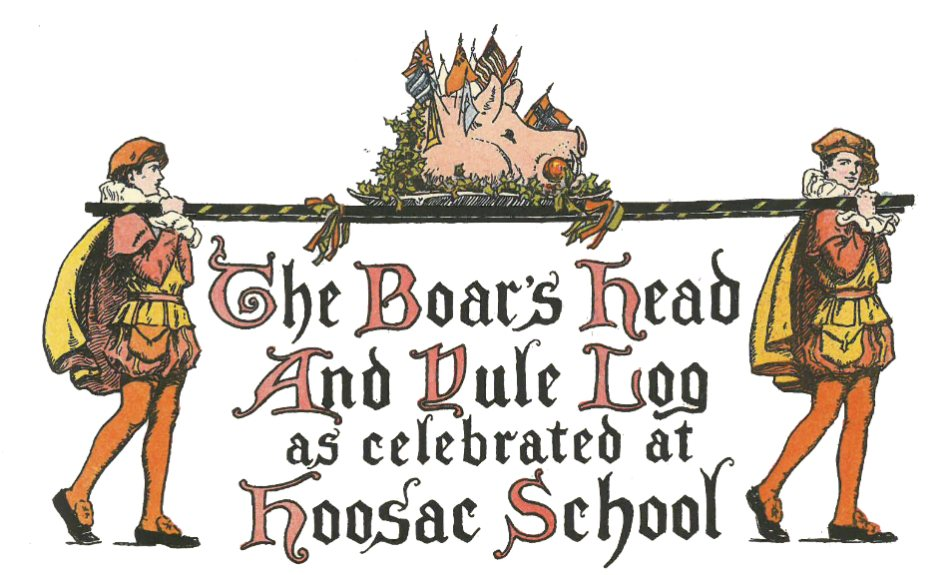
As you walk through Oxford you seem to be living in history, so many things call up events and figures of the past. Here Queen Elizabeth I listened to Shakespeare’s plays in a college hall, and made jokes with the professors – in Latin and Greek! In Pembroke College you can see Dr. Johson’s blue and white tea-pot (it holds about two quarts, for Johnson was a great tea-drinker and on one of his visits to Oxford his host poured out for him eighteen cups of tea!). In Oxford, Charles I held his Court at Christ Church while the colleges melted down all their silver dishes to help his cause during the Civil War, and his Queen Henrietta and her ladies walked in the gardens of St. John’s (there are two fine statues by le Sueur of Charles and Henrietta in the Quad there). Here Roger Bacon laid foundations of experimental science, not in the 18th but in the 13th century; here every night you can hear the sound of “Great Tom”, the big bell in Ton Tower, the tower that Wren designed for Christ Church. Every night at five minutes past nine the bell is rung 101 times in memory of the 101 students in Christ Church in Henry VIII’s time. In the medieval library of Merton College you can see all the chained books and the old benches just as they were in the 13th century. These reminders of the past are everywhere.
John and I walked along St. Giles, one of the most beautiful streets in Oxford. It is not, like most of the Oxford streets, narrow and winding between colleges, but very wide with magnificent trees all the way along it. And there, outside Balliol College, is a monument very like the “Cross” at Charing Cross in London. I asked John what it was. He said, “It’s the Martyrs’ Memorial. Bishop Latimer and Ridley Cranmer were condemned to death at Oxford in 1555 for their religious beliefs and were burned at the stake in this place. As the fire was being lighted Latimer said, ‘Be of good comfort Master Ridley and play the man. We shall this day light such a candle, by God’s Grace, in England as trust shall never be put out’”.
As I said, Oxford is not only beauty in stone, it is history in stone. John pointed out two church towers. “That is the tower of St. Martin’s and that of St. Mary’s. In the 14th century there were constant quarrels between the men of Oxford and the students of the University, or, as they said, between the ‘town’ and the ‘gown’, and on St. Scholastica’s Day, 1354, a quarrel broke out in an inn between some students and some townsmen. Others joined in, and soon the bells of St. Martin’s Church (the church of the townsmen) were ringing to gather the townsmen together. The Chansellor (that is the head of the University) tried to stop the fighting but he was shot at and had to retreat. So, the bells of St. Mary’s (the church of the students) were rung to collect the students together, and they shot at the townsmen with bows and arrows. Two thousand people from the countryside round Oxford came into the city to help the townsmen; colleges were attacked and the battle went on for three days. The King, Edward III, was at Woodstock, about eight miles from Oxford, and he ordered the Chansellor of the University and the Mayor of Oxford to appear before him. He decided that the townspeople had been in the wrong and ordered the Mayor and the chief citizens of Oxford to attend the Church of St. Mary’s every St. Scholastica’s Day for a service in memory of the students who had been killed in the fighting, and to pay an offering of forty pence. And for nearly 500 years, every St. Scholastica’s Day, the Mayor and the chief citizens of Oxford went to St. Mary’s and paid the forty pence.”
The morning after this chat with John, I was very forcibly reminded of another old Oxford tradition. I was awakened at five o’clock in the morning by a terrible noise in St. Giles outside the college, the noise of hundreds of people. Half-awake, I thought for a moment that another St. Scholastica’s riot had broken out, and quickly dressed and went outside to see what was happening. I discovered that it was St. Giles Fair. This has taken place at the beginning of September every since the 12th century. The whole appearance of St. Giles was quite changed. Preparations for the fair mustn’t begin before 5 a. m. At five o’clock the entrances to St. Giles are closed to traffic. I looked out, and there, waiting to rush in, was a stream of carts, cars, wagons, roundabouts, swings, coconut-stalls, strong men, and “all the fun of the fair”. It’s all very noisy and jolly and you’d probably think it was rather silly – but it’s great fun while it lasts. It’s all these contrasts in Oxfords that make the place so fascinating. Oxford doesn’t live only in the past; you feel there is a sense of continuity all through its history. To go from Magdalens Bridge, where the lovely Tower stands like a guardian of the city, through Radcliffe Square, the heart of the University, past the great Bodleian Library (to which a copy of every book published in Great Britain has to be sent) and on to the fine new science building of the Clarendon Laboratories, is to pass through streets where the Middle Ages, the 18th century and the modern world rub shoulders. Here, men have expressed in stone the finest culture of their periods. Norman, Gothic, Renaissance, Classic, Modern are all there in friendly rivalry, each beautiful thing adding something to the contrasting beautiful thing that its neighbour. I felt very strongly this mingling of old and new when we visited New College, which in spite of its name, is one of the oldest colleges. It was started in 1380. The oldest colleges are Merton, University College and Balliol, all between A. D. 1250 and 1300. Here, against a background of Gothic stonework, is the gigantic statue of Lazarus, carved by Epstein only a few years ago. And in New College I saw one of the most moving things I have seen in Oxford, moving because it seemed to me to express so well the noble, generous spirit of Oxford. It was a war-memorial that said: “In memory of the men of this college who, coming from a foreign land, entered into inheritance of this place and, returning, fought and died for their country in the war 1914-1919.
Prinz Wolrad-Friedrich zu Waldreck-Pyrmont
Frieherr Wilhelm von Sell: Erwin Beit von Speyer”.
The men to whom that memorial was raised were Germans who had fought against England.
The beauty of these building sand the peace of the colleges and the loveliness of the gardens like St. John’s and Worcester, these are the things I shall never forget. I’m afraid my letter has wandered on at great length, but I can’t finish without telling you a story that I had from John. I happened to say to him as we walked through one of the gardens, “I wonder how they get these lovely lawns.” John said, “That’s what an American visitor asked one of the gardeners here. He said he’d like to have a lawn like that in his big house in America. ‘Oh, it’s quite easy,’ said the gardener, ‘you just roll them and cut them and roll them and cut them. That’s all.’ ‘And how long do you do that?’ said the American. ‘Oh,’ said the gardener, ‘for about five hundred years’.”
There’s a lot more I’d like to tell you about Oxford, but that must wait until I see you again.
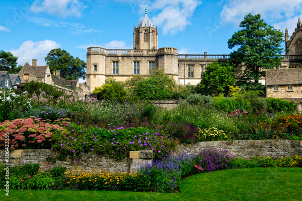
1. "The text describes several ancient Oxford traditions, like the May Morning hymn at Magdalen Tower and Queen’s College’s needle-and-thread ceremony. How do these traditions reflect the blending of history, symbolism, and academic culture at Oxford?"
2. "The St. Scholastica’s Day riot highlights centuries of tension between Oxford’s townspeople and students. Based on the text, what does this conflict reveal about the relationship between universities and their surrounding communities in medieval Europe?"
3. "New College’s memorial honors German students who fought against England in WWI. Why is this memorial particularly significant, and what does it suggest about Oxford’s values regarding education and nationality?"
4. "The author describes Oxford as a place where 'the Middle Ages, the 18th century, and the modern world rub shoulders.' How does the coexistence of Norman, Gothic, Renaissance, and modern architecture contribute to Oxford’s unique character?"
5. The anecdote about the American and the 500-year-old lawn uses humor to make a point. What deeper message does this story convey about Oxford’s identity and the patience required to cultivate tradition?
Answer · 4.ox_ha
4.ox_ha
ANSWER — Oxford letter, rest (HA discussion)
1. May Morning (choir on Magdalen Tower) and needle-and-thread at Queen’s (pun on aiguille/fil ↔ Eglesfield) link founding history, symbolism and academic ritual that has lasted for centuries.
2. St Scholastica’s Day: town vs gown conflict shows that the medieval university was a power inside the city — disputes could become three-day fights; the king sided with the university.
3. The New College memorial to German students (who fought against England) stresses learning and humanity above national enmity.
4. Architecture of different ages side by side creates a sense of continuous history: past and present rub shoulders — not a museum, but a living city.
5. The joke about a lawn needing “500 years of rolling and mowing” — tradition and patience: Oxford beauty cannot be bought overnight; it grows with time.
Lesson 5
CAMBRIDGE
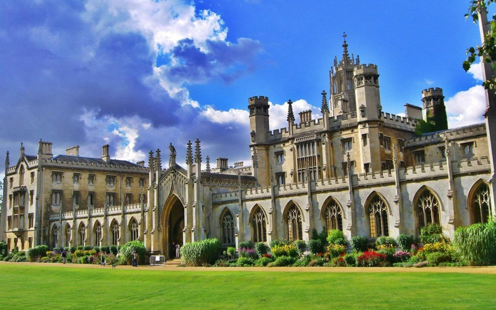
General Information
- Founded: 1209 (by scholars fleeing Oxford after conflicts with townspeople).
- Location: Cambridge, England (a picturesque city 50 miles north of London).
- Type: Public collegiate research university.
- Colleges: 31 autonomous colleges (e.g., Trinity, King’s, St John’s).
- Students: approximately 24,000 (undergraduate & postgraduate).
- Motto: "Hinc lucem et pocula sacra" ("From here, light and sacred draughts").
Key Features
1. Academic Excellence
- Reputation: Consistently ranks among the top 3 universities globally (rivaling Oxford).
- Strengths: Dominates in STEM (Newton, Darwin, Turing), Economics, and Humanities.
- Notable Alumni: 121 Nobel laureates (more than any other institution), including:
- Scientists: Isaac Newton, Stephen Hawking, James Watson (DNA).
- Writers: John Milton, Sylvia Plath.
- Leaders: Charles Darwin, John Maynard Keynes, Emma Thompson.
2. Unique Teaching System
- Supervisions: Small-group tutorials (similar to Oxford’s "tutorials"), fostering close mentorship.
- Lectures: Organized by the university, open to all students regardless of college.
3. Traditions & Culture
- Formal Halls: Stately dinners in college halls, often requiring gowns.
- May Bumps: Annual rowing races on the River Cam.
- Mathematical Bridge: A wooden footbridge at Queen’s College, designed without nails (rebuilt with nails later).
- Timekeeping: Some colleges still use "Cambridge time" (5 minutes behind GMT for evening events).
4. Architecture & Landmarks
- King’s College Chapel: A masterpiece of Gothic architecture with its world-famous choir.
- The Backs: Scenic green spaces along the River Cam, dotted with college gardens.
- Wren Library (Trinity College): Houses rare manuscripts (e.g., Newton’s notebooks, A.A. Milne’s Winnie-the-Pooh).
5. Rivalry with Oxford
- The Boat Race: Annual rowing competition on the Thames since 1829.
- Oxbridge Distinctions: Cambridge leans more scientific; Oxford stronger in humanities/law.
Fun Facts
- Trinity College’s Wealth: Its endowment (£1.5 billion+) exceeds some small nations’.
- Punting: Students and tourists glide along the Cam in flat-bottomed boats (punts).
- "Silent Party": At Trinity Ball, guests dance with wireless headphones to avoid noise complaints.
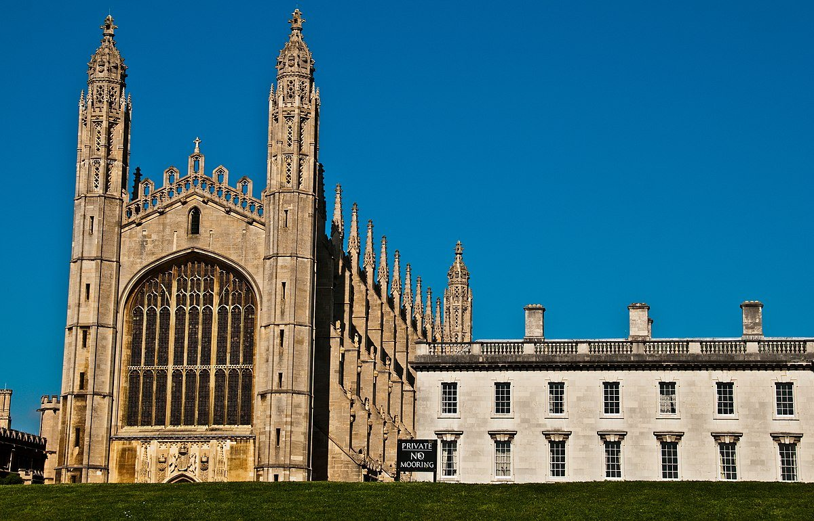
King’s College Chapel
Read the letter from Cambridge and discuss the questions with a partner
A LETTER FROM CAMBRIDGE
My coming to Cambridge has been an unusual experience. From whatever country one comes as a student one cannot escape the influence of the Cambridge traditions – and they go back so far! Here, perhaps, more than anywhere else, I have felt at one and the same time at the Past, the Present and even the Future. It’s easy to see in the old grey stone buildings how the past has moulded the present and how the present is giving shape to the future. So let me tell you a little of what this University town looks like and how it came to be here at all.
The story of the University begins, so far as I know, in 1209 when several hundred students and scholars arrived in the little town of Cambridge after having walked 60 miles from Oxford.
These students were all churchmen and had been studying in Oxford at that city’s well-known schools. It was a hard life at Oxford for there was constant trouble, even fighting, between the townsfolk and the students. Then one day a student accidentally killed a man of the town. The Mayor arrested three other students who were innocent, and by order of King John (who was quarreling with the Church and knew that the death of three students clergymen would displease it) they were put to death by hanging. In protest, many students moved elsewhere, some coming to Cambridge; and so, the new University began.
Of course, there were no Colleges in those early days and students life was very different from what it is now. Students were of all ages and came from anywhere and everywhere. Those from the same part of the country tended to group themselves together and these groups, called “Nations”, often fought one another.
The students were armed; some even banded together to rob the people of the countryside. Gradually the idea of the College developed, and in 1284 Peterhouse, the oldest College in Cambridge, was founded.
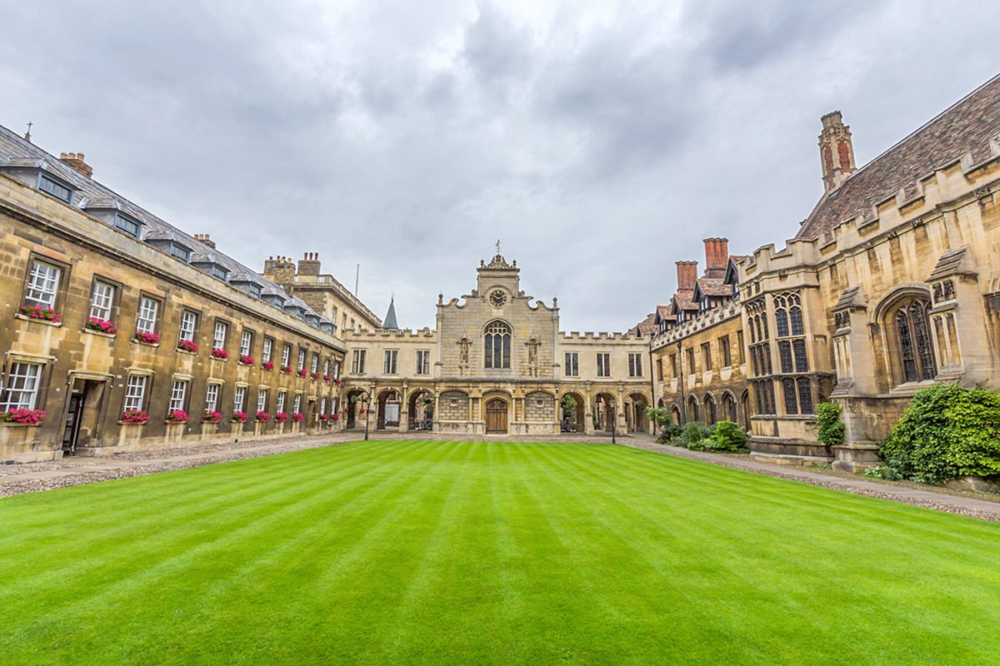
Life in College was strict; students were forbidden to play games, to sing (except sacred music), to hunt or fish or even to dance. Books were very scarce and all the lessons were in the Latin language which students were supposed to speak even among themselves.
In 1440 King Henry VI founded King’s College, and other colleges followed. Erasmus, the great Dutch scholar, was at one of these, Queen’s College, from 1511 to 1513, and though he writes that the College beer was “weak and badly made” he also mentions a pleasant custom that unfortunately seems to have ceased.
“The English girls are extremely pretty,” Erasmus says, “soft, pleasant, gentle, and charming. When you go anywhere on a visit the girls all kiss you. They kiss you when you go away and again when you return.”
Many other great men studied at Cambridge, amongst them Bacon, Milton, Cromwell, Newton, Wordsworth, Byron and Tennyson.
Practical jokes seem always to have been common, and there is an amusing tale of one played on the poet Gray by the students of Peterhouse College where he lived. Gray was a rather nervous man with a fear of fire, and every night he used to hang a rope-ladder from his window for use in case a fire broke out. One night there was a great noise and shouts of “Fire! Fire!” Dressed only in his nightgown Gray opened his window, climbed onto his ladder and slid down as fast as he could – into a barrel of cold water put there by a joking student!
- Why did students from Oxford move to Cambridge in 1209, leading to the founding of Cambridge University?
- How did student life in early Cambridge differ from that of today? Mention at least two differences.
- What was the purpose of the "Nations" in early Cambridge University, and what problems did they cause?
- According to Erasmus, what was one pleasant custom in England that he experienced during his time at Queen’s College?
- What practical joke did the students of Peterhouse play on the poet Thomas Gray, and why was it particularly amusing?
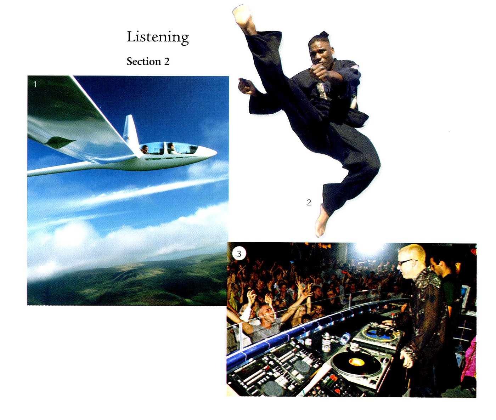
Answer · 5.cam1
5.cam1
ANSWER — Letter from Cambridge, part 1
1. After a townsman was killed by a student, the mayor hanged three innocent students (on King John’s order); in protest many left Oxford, some for Cambridge (1209) → that is how the university began.
2. Differences: no colleges; students of all ages; Nations; weapons; lessons in Latin; bans on games/dancing; few books. (any ≥2)
3. Nations — groups by origin; they often fought each other.
4. Erasmus: when a girl visits, she kisses the guest (when you go / leave / return).
5. Gray feared fire and kept a rope ladder; someone shouted “Fire!”, he slid down into a barrel of cold water — a joke playing on his fear.
The photographs are taken from the websites of different clubs and societies at a university. Match each photo with one of these clubs or societies.
Ju-Jitsu | Gliding | DJ
- Discuss these questions with another student. If you are at university now, or have been in the past, refer to your actual experience.
a. What clubs or societies would you join at university?
b. Would you like to help run one of these groups? Why? / Why not?
c. What reasons do students have for joining clubs and societies?
- You are going to hear someone giving first-year students at the beginning of their university course information about activities they can do during their free time. Before you listen, answer these questions.
a. What kinds of activities do you think the speaker will mention?
b. Read the short answer questions and partial answers 1–10 below. What kinds of words are required? Can you predict an answer?
c. Are there any answers that are impossible even to guess at?
Questions 1–6: Short-answer questions
Listen to the recording and answer questions 1–6 using no more than THREE WORDS.
- How many societies can students join at the university?
……….. - What is the Rock Society?
……….. - How often does the Mountaineering Club meet?
……….. - When does the Mountaineering Club visit actual mountains?
……….. - What kind of classes is the Dance Club putting on in the summer?
……….. - What does the Hellenic Society organize every month?
………..
4. Look at the sentences below. What kind of information do you need for each answer?
Questions 7–10: Sentence completion
Complete the sentences. Write NO MORE THAN THREE WORDS for each answer.
- Most artistic events take place in or around the (7)……….. .
- It is always possible to see Eastern European Art at the (8)……….. .
- More unconventional plays can be seen at (9)……….. .
- To get into the choir or jazz band, students have to have (10)……….. .
_____________________________________________________________________________________
GRAMMAR: Revision of present tenses
Exercise 1: Fill in the blanks with the correct present tense:
- The dean usually _________ (wear) a bow tie to formal events. (PS)
- Look! The students ___________ (protest) in the quadrangle. (PC)
- The alumni association ____________ (raise) funds for new seminars. (PP)
- The tutor __________ (grade) dissertations all week. (PPC)
- Cutting-edge research often ___________ (require) interdisciplinary collaboration. (PS)
Exercise 2: Correct the tense mistakes:
- ❌ "The don is knowing all the tutors well."
- ❌ "Students have submitted their theses for weeks."
- ❌ "The lecture theatre holds 200 people currently."
Exercise 3: Rewrite in the specified tense:
- (PS → PC) The chapel hosts concerts.
- (PP → PPC) She has tutored three students.
- (PC → PS) The professor is giving a lecture.
Exercise 4: Complete with PS/PC/PP/PPC:
"This semester, the sociology department (1) offers (offer) new seminars on gender studies. Right now, Dr. Lee (2) is leading (lead) a tutorial in Room 12. The department (3) has fostered (foster) 20 exchange programs since 2020. Recently, students (4) have been complaining (complain) about outdated reading lists. Despite this, the university (5) ranks (rank) among the top 50 globally."
_____________________________________________________________________________________
Keys
Exercise 1: Verb Form Completion
- The dean usually wears (wear) a bow tie to formal events. → PS
- Look! The students are protesting (protest) in the quadrangle. → PC
- The alumni association has raised (raise) funds for new seminars. → PP
- The tutor has been grading (grade) dissertations all week. → PPC
- Cutting-edge research often requires (require) interdisciplinary collaboration. → PS
Exercise 2: Error Correction
- ❌ "The don is knowing all the tutors well."
✅ The don knows (state verb → PS) - ❌ "Students have submitted their theses for weeks."
✅ Students have been submitting (duration → PPC) - ❌ "The lecture theatre holds 200 people currently."
✅ The lecture theatre is holding (temporary situation → PC)
Exercise 3: Sentence Transformation
- (PS → PC) The chapel hosts concerts. →
The chapel is hosting a concert today. (PC) - (PP → PPC) She has tutored three students. →
She has been tutoring since September. (PPC) - (PC → PS) The professor is giving a lecture. →
The professor gives lectures every Tuesday. (PS)
Exercise 4: Mixed Tense Paragraph
- offers (PS)
- is leading (PC)
- has fostered (PP)
- have been complaining (PPC)
- ranks (PS)
HOME ASSIGNMENT
Read the rest of the letter from Cambridge and prepare to answer the questions after it.
Now let me give you some idea of what you would see if you were to walk around Cambridge. Let us imagine that I am seeing the sights for the first time. It is a quiet market town and the shopping centre for quite a large area, but I notice more bookshops than one normally sees in country towns, and more tailors’ shops showing in their windows the black gowns that students must wear, long gowns that hang down to the feet for graduates and shorter ones for undergraduates.
In the centre of the town is the market-place where several times each week country traders come to sell their produce. Everywhere there are teashops, some in modern and many in old buildings, some in modern and many in old buildings, reached by climbing narrow stairs. The streets are narrow and crowded, and here and there among the modern shops and offices a quiet opening tempts one away from the rush of the shopping centre. There is a great deal of bicycle traffic, mainly undergraduates who race along thoughtless of safety, with long scarves (in various colours to denote their College) wound round their necks.
Continuing, I find my way to the river which flows behind the College building and curls about the town in the shape of a horseshoe. This narrow river (a good jumper could almost leap it) is the Granta, and a little farther on it changes its name to the Cam. It flows slowly and calmly. The “Back”, as this part of the town behind the Colleges is called, have been described as the loveliest man-made view in England. It is indeed beautiful. To the left, across the stream, there are no buildings, merely meadows. College gardens and lines of tall trees. Everything is very green and peaceful. On the river-bank are willow trees with their branches bending into the water, and at intervals along the river, stone bridges cross the stream and lead into the College which line the right bank. The deep-coloured brick or stone of the College walls, sometimes red and sometimes grey, is 500 years old. The walls rise out of their own reflection in the water and their colour contrasts charmingly with glimpses of the many green lawns.
Walking along the river-bank, where the only sound is the noise of the gentle wind in the tree-tops, I come to my College, King’s College. Across a bridge and beyond a vast carpet of green lawn stands King’s College Chapel, the largest and most beautiful building in Cambridge and the most perfect example left of English fifteenth-century architecture.
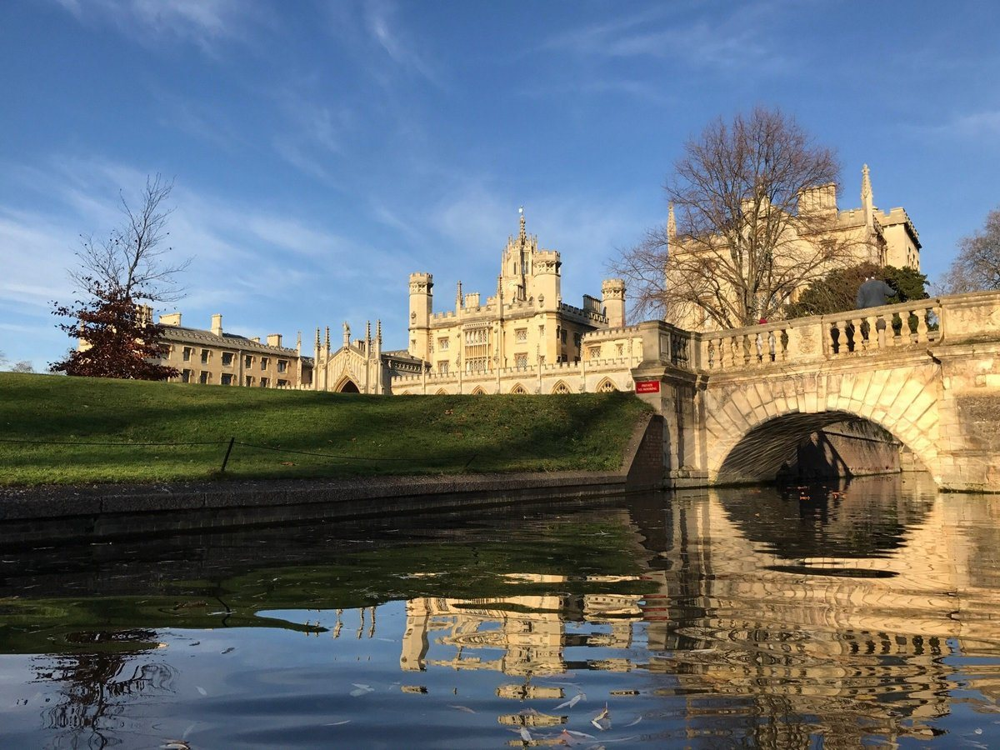
The Colleges join one another along the curve of the river. Going through a College gate one finds one is standing in an almost square space of about 70 yards (the size varies from College to College) known as a “court”. Looking down into the court on all sides are the building where the students live. The Colleges are built on a plan common to all. There is a chapel, a library, and a large dining-hall. One court leads into another and each is made beautiful with lawns or a fountain or charming old stone path. The student gets a good impression of all the English architectural styles of the past 600 years – the bad as well as the good.
There are thirty one Colleges, excluding two for women students, which were built near the end of the last century (women students do not play a very active part in University life at Cambridge, by the way. But they work harder than men and one seldom sees them outside of the classrooms).
It is difficult to walk around the quiet courts of the Colleges without feeling a sense of peace and scholarship. And the sense of peace that green lawns always suggest to me is found in the town too, for often one is surprised to meet open stretches of grass in the midst of the streets and houses giving a charmingly cool countryside effect and reminding one of the more graceful days of the eighteenth century. I’ll finish as I began on that note, the feeling one has here of the past in the present, of continuing tradition and firm faith.
- What two types of shops are particularly noticeable in Cambridge compared to other country towns?
- How can you distinguish between graduate and undergraduate students based on their gowns?
- What is unusual about the traffic in Cambridge’s streets?
- What are the two names of the river that flows through Cambridge, and where does the name change?
- Why is the "Back" considered one of the loveliest man-made views in England?
- Describe the scenery on the left and right banks of the river.
- What is special about King’s College Chapel?
- What are the common features found in every Cambridge College?
- How do the Colleges reflect different architectural styles?
- What does the text suggest about women students at Cambridge in terms of their role and work habits?
- What feeling does the author associate with walking through the College courts?
- How does Cambridge blend urban and countryside elements in its town layout?
Answer · 5.ha
5.ha
ANSWER — Cambridge letter, rest (HA)
1. Bookshops and tailors with black gowns.
2. Graduates — long gowns to the feet; undergraduates — shorter.
3. Lots of bicycles; students race about with long scarves in college colours.
4. First Granta, further downstream — Cam.
5. The Backs — green meadows, gardens, trees and college walls by the water; called one of the most beautiful man-made views in England.
6. Left: meadows, gardens, tall trees; right: college walls, bridges into colleges; willows by the bank.
7. King’s College Chapel — the largest/finest building in Cambridge; the best example of 15th-century English architecture.
8. Each college has a chapel, library, large dining-hall; a system of courts.
9. In the courts/buildings you can see styles from ~600 years of English architecture.
10. Women were then less active in uni life but studied harder; rarely seen outside lecture rooms.
11. A feeling of peace and scholarship.
12. Among the streets — patches of grass, a “village” calm inside the city + stone traditions.
Lesson 6
Watch Steve Jobs' speech at the Stanford University commencement ceremony and answer the questions below.
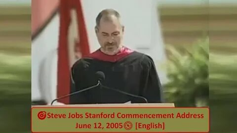
Comprehension Questions
Why did Steve Jobs drop out of Reed College?
How did his calligraphy class later influence technology?
3.What happened to Jobs when he was 30, and how did he react?
4.Why does Jobs say getting fired from Apple was "the best thing" that could have happened?
5.What lesson does Jobs share about death and making life choices?
6.What was the doctors' initial diagnosis about his health, and what turned out to be true?
7.What does "Stay Hungry. Stay Foolish" mean to Jobs?
Steve Jobs - 2005 Stanford Commencement Address
I am honored to be with you today at your commencement from one of the finest universities in the world. Truth be told, I never graduated from college, and this is the closest I've ever gotten to a college graduation. Today I want to tell you three stories from my life. That's it. No big deal. Just three stories.
The first story is about connecting the dots.
I dropped out of Reed College after the first 6 months, but then stayed around as a drop-in for another 18 months or so before I really quit. So why did I drop out?
It started before I was born. My biological mother was a young, unwed graduate student, and she decided to put me up for adoption. She felt very strongly that I should be adopted by college graduates, so everything was all set for me to be adopted at birth by a lawyer and his wife. Except that when I popped out, they decided at the last minute that they really wanted a girl. So my parents, who were on a waiting list, got a call in the middle of the night asking: "We got an unexpected baby boy; do you want him?" They said: "Of course." My biological mother later found out that my mother had never graduated from college and that my father had never graduated from high school. She refused to sign the final adoption papers. She only relented a few months later when my parents promised that I would go to college.
This was the start of my life.
And 17 years later I did go to college. But I naively chose a college that was almost as expensive as Stanford, and all of my working-class parents' savings were being spent on my college tuition. After six months, I couldn't see the value in it. I had no idea what I wanted to do with my life and no idea how college was going to help me figure it out. And here I was spending all of the money my parents had saved their entire life. So I decided to drop out and trust that it would all work out okay. It was pretty scary at the time, but looking back it was one of the best decisions I ever made. The minute I dropped out I could stop taking the required classes that didn't interest me, and begin dropping in on the ones that looked far more interesting.
It wasn't all romantic. I didn't have a dorm room, so I slept on the floor in friends' rooms, I returned coke bottles for the 5¢ deposits to buy food with, and I would walk the 7 miles across town every Sunday night to get one good meal a week at the Hare Krishna temple. I loved it. And much of what I stumbled into by following my curiosity and intuition turned out to be priceless later on. Let me give you one example:
Reed College, at that time, offered perhaps the best calligraphy instruction in the country. Throughout the campus, every poster, every label on every drawer, was beautifully hand calligraphed. Because I had dropped out and didn't have to take the normal classes, I decided to take a calligraphy class to learn how to do this. I learned about serif and san serif typefaces, about varying the amount of space between different letter combinations, about what makes great typography great. It was beautiful, historical, artistically subtle in a way that science can't capture, and I found it fascinating.
None of this had even a hope of any practical application in my life. But ten years later, when we were designing the first Macintosh computer, it all came back to me. And we designed it all into the Mac. It was the first computer with beautiful typography. If I had never dropped in on that single course in college, the Mac would have never had multiple typefaces or proportionally spaced fonts. And since Windows just copied the Mac, it's likely that no personal computer would have them. If I had never dropped out, I would have never dropped in on this calligraphy class, and personal computers might not have the wonderful typography that they do. Of course, it was impossible to connect the dots looking forward when I was in college. But it was very, very clear looking backwards ten years later.
Again, you can't connect the dots looking forward; you can only connect them looking backwards. So you have to trust that the dots will somehow connect in your future. You have to trust in something: your gut, destiny, life, karma, whatever. Because believing that the dots will connect down the road will give you the confidence to follow your heart, even when it leads you off the well worn path, and that will make all the difference.
My second story is about love and loss.
I was lucky - I found what I loved to do early in life. Woz and I started Apple in my parents' garage when I was 20. We worked hard, and in 10 years Apple had grown from just the two of us in a garage into a $2 billion company with over 4,000 employees. We had just released our finest creation - the Macintosh - a year earlier, and I had just turned 30. And then I got fired. How can you get fired from a company you started? Well, as Apple grew, we hired someone who I thought was very talented to run the company with me, and for the first year or so, things went well. But then our visions of the future began to diverge and eventually we had a falling out. When we did, our Board of Directors sided with him. And so, at 30, I was out... and very publicly out. What had been the focus of my entire adult life was gone, and it was devastating.
I really didn't know what to do for a few months. I felt that I had let the previous generation of entrepreneurs down - that I had dropped the baton as it was being passed to me. I met with David Packard and Bob Noyce and tried to apologize for screwing up so badly. I was a very public failure, and I even thought about running away from the valley. But something slowly began to dawn on me - I still loved what I did. The turn of events at Apple had not changed that one bit. I had been rejected, but I was still in love. And so I decided to start over.
I didn't see it then, but it turned out that getting fired from Apple was the best thing that could have ever happened to me. The heaviness of being successful was replaced by the lightness of being a beginner again, less sure about everything. It freed me to enter one of the most creative periods of my life.
During the next five years, I started a company named NeXT, another company named Pixar, and fell in love with an amazing woman who would become my wife. Pixar went on to create the world's first computer animated feature film, Toy Story, and is now the most successful animation studio in the world. In a remarkable turn of events, Apple bought NeXT, I returned to Apple, and the technology we developed at NeXT is at the heart of Apple's current renaissance. And Laurene and I have a wonderful family together.
I'm pretty sure none of this would have happened if I hadn't been fired from Apple. It was awful tasting medicine, but I guess the patient needed it. Sometimes life's going to hit you in the head with a brick. Don't lose faith. I'm convinced that the only thing that kept me going was that I loved what I did. You've got to find what you love. And that is as true for your work as it is for your lovers. Your work is going to fill a large part of your life, and the only way to be truly satisfied is to do what you believe is great work. And the only way to do great work is to love what you do. If you haven't found it yet, keep looking, and don't settle, as with all matters of the heart, you'll know when you find it. And, like any great relationship, it just gets better and better as the years roll on. So keep looking; don't settle.
My third story is about death.
When I was 17, I read a quote that went something like: "If you live each day as if it was your last, someday you'll most certainly be right." It made an impression on me, and since then, for the past 33 years, I have looked in the mirror every morning and asked myself: "If today were the last day of my life, would I want to do what I am about to do today?" And whenever the answer has been "No" for too many days in a row, I know I need to change something.
Remembering that I'll be dead soon is the most important tool I've ever encountered to help me make the big choices in life. Because almost everything - all external expectations, all pride, all fear of embarrassment or failure - these things just fall away in the face of death, leaving only what is truly important. Remembering that you are going to die is the best way I know to avoid the trap of thinking you have something to lose. You are already naked. There is no reason not to follow your heart.
About a year ago I was diagnosed with cancer. I had a scan at 7:30 in the morning, and it clearly showed a tumor on my pancreas. I didn't even know what a pancreas was. The doctors told me this was almost certainly a type of cancer that is incurable, and that I should expect to live no longer than three to six months. My doctor advised me to go home and get my affairs in order, which is doctor's code for prepare to die. It means to try to tell your kids everything you thought you'd have the next 10 years to tell them in just a few months. It means to make sure everything is buttoned up, so that it will be as easy as possible for your family. It means to say your goodbyes.
I lived with that diagnosis all day. Later that evening I had a biopsy, where they stuck an endoscope down my throat, through my stomach and into my intestines, put a needle into my pancreas and got a few cells from the tumor. I was sedated, but my wife, who was there, told me that when they viewed the cells under a microscope the doctors started crying because it turned out to be a very rare form of pancreatic cancer that is curable with surgery. I had the surgery, and thankfully, I'm fine now.
This was the closest I've been to facing death, and I hope it's the closest I get for a few more decades. Having lived through it, I can now say this to you with a bit more certainty than when death was a useful but purely intellectual concept:
No one wants to die. Even people who want to go to heaven don't want to die to get there. And yet death is the destination we all share. No one has ever escaped it. And that is as it should be, because death is very likely the single best invention of Life. It is Life's change agent. It clears out the old to make way for the new. Right now, the new is you, but someday not too long from now, you will gradually become the old and be cleared away. Sorry to be so dramatic, but it's quite true.
Your time is limited, so don't waste it living someone else's life. Don't be trapped by dogma - which is living with the results of other people's thinking. Don't let the noise of others' opinions drown out your own inner voice. And most important, have the courage to follow your heart and intuition. They somehow already know what you truly want to become. Everything else is secondary.
When I was young, there was an amazing publication called The Whole Earth Catalog, which was one of the bibles of my generation. It was created by a fellow named Stewart Brand not far from here in Menlo Park, and he brought it to life with his poetic touch. This was in the late 60's, before personal computers and desktop publishing, so it was all made with typewriters, scissors, and polaroid cameras. It was sort of like Google in paperback form, 35 years before Google came along: it was idealistic, overflowing with neat tools and great notions.
Stewart and his team put out several issues of The Whole Earth Catalog, and then when it had run its course, they put out a final issue. It was the mid-1970s, and I was your age. On the back cover of their final issue was a photograph of an early morning country road, the kind you might find yourself hitchhiking on if you were so adventurous. Beneath it were the words: "Stay Hungry. Stay Foolish." It was their farewell message as they signed off. Stay Hungry. Stay Foolish. And I have always wished that for myself. And now, as you graduate to begin anew, I wish that for you.
Stay Hungry. Stay Foolish.
Thank you all very much.
Answer · 6.jobs
6.jobs
ANSWER — Steve Jobs speech (comprehension + numbers)
1. Dropped out of Reed: saw no value in required courses; parents spent all their savings; wanted to study what interested him. Stayed as a drop-in for ~18 months.
2. Calligraphy → font ideas (serif/sans, spacing) when creating the Mac; the first machine with beautiful typography; Windows later copied it.
3. At 30 he was fired from Apple (the board sided with the hired CEO); he was devastated, thought of leaving the Valley, but realised he still loved the work → started again.
4. “Best thing”: the burden of success fell away, he became a beginner again → NeXT, Pixar, family; then Apple bought NeXT and he returned.
5. Remembering death helps drop others’ expectations/fear and follow your heart; don’t live someone else’s life or dogma.
6. At first: almost certainly incurable pancreatic cancer, 3–6 months; biopsy showed a rare operable form → surgery; he was fine (at the time of the speech).
7. Stay Hungry. Stay Foolish — stay eager for knowledge/new things and not fear looking “foolish” (be curious, take risks); a wish for the graduates.
Numbers: 18 = months as drop-in; 35 = years before Google (Whole Earth Catalog); 4000 = employees at Apple; 20 = age when he started Apple; 33 = years of the mirror question; 2 = $2 billion company; 7 = 7:30 a.m. scan (or 7 miles to the temple).
Vocab gaps: dogma; renaissance; relented; diverge; stumbled into; clear out
Ending gaps: put out; put out; adventurous; Beneath; farewell; signed off; anew
What do these numbers refer to: 18 35 4000 20
33 2 7
Label key events (e.g. NeXT founding, Pixar’s success) on the timeline.
1955 1972 1975 1985 1986 2011
Born died
Vocabulary Tasks
Read the sentences below and try to figure out the meaning of highlighted words.
- She refused to sign the final adoption papers. She only relented a few months later when my parents promised that I would go to college.
2.But then our visions of the future began to diverge and eventually we had a falling out.
3.In a remarkable turn of events, Apple bought NeXT, I returned to Apple, and the technology we developed at NeXT is at the heart of Apple's current renaissance.
4. Don't be trapped by dogma - which is living with the results of other people's thinking.
5.And much of what I stumbled into by following my curiosity and intuition turned out to be priceless later on.
6.It is Life's change agent. It clears out the old to make way for the new. Right now, the new is you, but someday not too long from now, you will gradually become the old and be cleared away.
Complete the sentences below with highlighted words from the previous task.
1.After years of strict company policies, the new CEO encouraged innovation and rejected old _____. (dogma)
2.Apple experienced a creative _____ when Jobs returned, leading to groundbreaking products like the iMac. (renaissance)
3.At first, Jobs’ biological mother refused to sign the adoption papers, but she later _____ when his parents promised he’d go to college. (relented)
4.As Apple grew, Jobs and the hired CEO’s visions began to _____, causing tension. (diverge)
5.I _____ an old bookstore downtown and found a rare first edition.(stumled into)
6.Spring cleaning is the perfect time to _____ unused belongings. (clear out)
Complete the last part of Steve Job`s speech with words from the box.
Adventurous put out (2) anew beneath farewell signed off
Stewart and his team 1. __________ several issues of The Whole Earth Catalog, and then when it had run its course, they 2._______ a final issue. It was the mid-1970s, and I was your age. On the back cover of their final issue was a photograph of an early morning country road, the kind you might find yourself hitchhiking on if you were so 3.________. 4.____________ it were the words: "Stay Hungry. Stay Foolish." It was their 5._______ message as they 6.__________. Stay Hungry. Stay Foolish. And I have always wished that for myself. And now, as you graduate to begin 7.________, I wish that for you. Stay Hungry. Stay Foolish.
Graph Description Task
Here’s a graph of Apple's Revenue from 1985 to 2005 highlighting key milestones from Steve Jobs' journey (based on available data):
(in billions of USD)
Year | Revenue (USD) | Key Events |
|---|---|---|
1985 | $1.9B | Steve Jobs fired from Apple |
1990 | $5.6B | Decline during Jobs' absence |
1995 | $11.1B | Struggles before Jobs' return |
1997 | $7.1B | Jobs returns as interim CEO |
1998 | $5.9B | iMac launch (turning point) |
2001 | $5.4B | iPod release (start of recovery) |
2004 | $8.3B | Growth before iPhone era |
2005 | $13.9B | Strong recovery post-Jobs' return |
Study the sample graph description and identify its key components. Rate it on a scale of 1–9 based on the following criteria( task achievement, coherence and cohesion, lexical resource and grammar accuracy) and explain your evaluation.Think whether the author covers all key features,uses linking words and makes it easy to follow the text, uses a wide range of vocabulary and complex grammar.
The graph illustrates Apple's annual revenue in billions of US dollars from 1985 to 2005, a period marked by significant fluctuations tied to Steve Jobs' leadership.
Overall, Apple's revenue experienced dramatic shifts, beginning with a decline after Jobs' departure in 1985, followed by a strong recovery after his return in 1997.
In the initial phase (1985–1997), revenue was volatile. After Jobs was fired in 1985, Apple struggled to maintain consistent growth, peaking at $11.1 billion in 1995 before plummeting to $7.1 billion in 1997, reflecting poor strategic decisions.
However, a turning point occurred when Jobs resumed leadership in 1997. Revenue initially dipped to $5.9 billion in 1998 due to restructuring but then surged steadily. The launch of the iMac (1998) and iPod (2001) revitalized Apple’s brand, driving revenue up to $13.9 billion by 2005, nearly doubling within seven years.
In conclusion, the graph demonstrates how leadership and innovation critically impacted Apple’s financial performance. Jobs’ return marked the beginning of a historic turnaround, setting the stage for the company’s future dominance in the tech industry.
Word count: 170
Criteria | Score (1–9) | Explanation |
|---|---|---|
Task Achievement | ||
Coherence & Cohesion | ||
Lexical Resource | ||
Grammar Accuracy |
Linkers exercises.
Where would you use these linking expressions? Put them under the correct headings.
In conclusion/ Lastly/Firstly/ To begin with/ to conclude/Secondly/ Finally/ First of all/ Last but not least/ On balance/To sum up/ Then/Next.
For the first point | For further points | For the last point | In the conclusion |
Put the linking words and expressions in the box under the correct heading below.
| although | so | on account of | and |
| despite (the fact that) | due to (the fact that) | in order to | because |
| provided (that) | as well as | but | (and) yet |
| though | unless | in order that | whereas |
| if | as long as | even so | since |
| in case | besides | while | owing to |
| so as to | even though | to | in spite of |
| however | in addition to | because of | |
Reason | Contrast | Purpose | Addition | Conditional |
|---|---|---|---|---|
because...... | but...... | to...... | and...... | if...... |
...... | ...... | ...... | ...... | ...... |
...... | ...... | ...... | ...... | ...... |
...... | ...... | ...... | ...... | ...... |
...... | ...... | ...... | ...... | ...... |
Answer · 6.link
6.link
ANSWER linkers
6.10: because of; In spite of; Unless; if; so as to; in order that; because; even though; Since; if
6.19: attract investors; boost confidence; break into a market; close a deal; cut costs; hire employees; launch a product; meet a deadline; place an order; sign a contract
6.20: launched products; break into markets; orders placed; employees hired; confidence boosted; cut costs; attract investors
Circle the correct alternative in italics.
The city is unhealthy because/because of the pollution in the air.
Although/In spite of these problems, would you still like to invite me next month?
Unless/Besides you live in a big town, there are no traffic jams.
Please do not hesitate to contact me if/in case you need more detailed information.
I think that people should use their bicycles so/so as to reduce traffic.
I hope you will stay at our house in order/in order that you can visit our country.
The green hills and valleys need protecting because/owing to many people are building modern houses.
The other staff patiently explained the job to me even though/even so they were very busy themselves.
Since/As long as I love swimming and your club seems to be suitable, I would like to join it.
There are many ways of getting to school in case/if you study far away from your neighbourhood.
Complete the text with words from the previous exercise. Sometimes more than one answer is possible.
It was getting late by the time Sam and Marco approached the summit, on (1) account of the terrible weather on their way up. In (2) ...... to high winds that nearly swept them right off the mountain, they faced freezing temperatures and heavy snowfalls. And (3) ...... neither of them had any thoughts of giving up. In (4) ...... of the awful conditions they were determined to keep climbing even (5) ...... every step was now a huge effort, (6) ...... to the fact they were so high up and the air was so thin. As (7) ...... as that, Marco was feeling quite ill, probably (8) ...... of the height and a lack of food. But they knew that (9) ...... reach the top they couldn’t stop for anything, even meals. They also knew that (10) ...... they got there this time, they would probably never have another chance to try. And Sam was sure that as (11) ...... as they could begin going down by three o’clock, they would make it safely back to base camp tonight – (12) ...... they would both be very, very tired.
- Here are three engaging short stories about famous scientists who faced school expulsion
1. Young Rebel: The Expulsion of Albert Einstein
Before he revolutionized physics, 15-year-old Albert Einstein was told by his Munich schoolmaster, "You'll never amount to anything." Frustrated by the rigid Prussian education system that prioritized rote memorization over critical thinking, Einstein deliberately flouted authority. When teachers demanded absolute obedience, young Albert asked probing questions about light and time that they couldn't answer.
The final straw came when he refused to stand for a military-style inspection. "Such defiance cannot be tolerated," declared the headmaster in 1894. Ironically, this expulsion led Einstein to Switzerland’s progressive Aarau school, where visual learning and thought experiments flourished—laying the groundwork for his Theory of Relativity.
3. The Dyslexic Dropout: Thomas Edison’s Story
Port Huron, 1857. Twelve-year-old Thomas Edison’s teacher declared him "addled" (mentally slow) due to his dyslexia and incessant questions. After just three months of formal schooling, his furious mother—a former teacher herself—pulled him out, vowing, "I’ll teach him myself."
What seemed like failure became an advantage: Edison developed hands-on learning at home, conducting chemistry experiments in the basement. By 15, he was selling newspapers on trains and building his first lab in a baggage car—the start of his 1,093 patents.
Discussion Question:
How might history have changed if Einstein had conformed to traditional schooling?
Does formal education stifle unconventional genius?
Does graduating from university guarantee a successful career? Present arguments for and against this statement, and provide your own reasoned conclusion."
Successful business partnerships
1 SPEAKING Work in pairs. What do you think are the advantages and disadvantages of starting a business on your own or with a friend?
Listening Strategy
To help you choose the correct answer, remember that the words in the options in the task will be paraphrased in the recording. This means that the speakers will use different words to express the same idea.
2 Read the Listening Strategy. Then look at the question below. Think of a way in which each of the options might be paraphrased.
Jerry was drawn towards Ben because Ben
a was the same age as him.
b came out with a funny remark.
c did not excel at PE.
d shared his love of ice cream.
3 Listen to the story of how the ice-cream company Ben & Jerry’s was formed. Look at exercise 2 again and choose the correct answer. How was the correct option phrased in the recording?
Listen to a radio interview about successful business partnerships. Choose the correct answer (a–d).
1 Margaret refers to Bill Gates and Paul Allen as ‘partners-in-crime’ because they
a failed their final year at school due to lack of work.
b deceived the I.T. teacher into giving them extra computer time.
c used their superior knowledge of I.T. to their advantage.
d stopped attending school to pursue their interest in I.T.
2 Margaret says that Steve Wozniak had to be persuaded by Steve Jobs
a to attend a Bob Dylan concert.
b to accept a third member into the partnership.
c to develop his second computer.
d to commercialise his new invention.
3 Margaret mentions Hewlett and Packard’s holiday because it marks the moment the two founders
a sealed their friendship definitively.
b met for the first time.
c decided on a name for their new company.
d came up with the idea of opening a business.
4 According to Margaret, what happened on the first occasion of Brin and Page’s acquaintance?
a They got on like a house on fire.
b They didn’t exchange a single word.
c They refused to have anything to do with each other.
d They didn’t see eye to eye.
5 Which statement is true for all four partnerships?
a The partners were born in the same year.
b The partners got acquainted during their studies.
c The partners bonded over a common interest.
d The partners graduated at the top of their class.
5 VOCABULARY Listen again. How are the underlined words and phrases paraphrased in the recording?
1 Having a common interest in computers ...
2 The pair began to think about going into business together.
3 Allen convinced Gates to leave university before completing the course ...
4 Jobs persuaded him to set up a company to sell it ...
5 Ronald Wayne, who later withdrew from the deal ...
6 The company became successful quickly ...
7 ... neither of the founders was alive to see this achievement.
8 Larry Page started the relationship badly with Sergey Brin.
6 Complete the sentences with the expressions in exercise 5.
1 Harry didn’t finish the course. He dropped out.
2 They were delighted to attend their son’s graduation as they had doubts that they would ever ...
3 I was late on the first day of my work experience, so I ...
4 Mia isn’t sure whether to study law or not, but she's ...
5 The project became too expensive, so in the end they ...
6 The campaign was successful, so the new product ...
7 I had no desire to go to the open day, but my friends ...
8 As supporters of West Ham, Rob and Eddie never miss a match. They ...
7 SPEAKING Work in pairs. Discuss the questions.
1 What do you think are the reasons for the success of the four business partnerships in the recording?
2 If you were setting up a business, which of the people you know would you choose as a partner? Why?
3 Number the qualities 1–10 in the order of their importance to a successful business relationship. (1 = most important.)
communication compatibility confidence co-operation drive flexibility passion punctuality respect trust
Vocabulary Builder. Business collocations:
3 Match the verbs and nouns to make business collocations. Use a dictionary to help you.
1 atttract 2 boost 3 break into 4 close 5 cut | A a deal B costs C investors D a market E confidence |
6 hire 7 launch 8 meet 9 place 10 sign | F an order G a contact H a product I a deadline J employees |
Complete the sentences with the above-mentioned collocations . Use the correct form.
The company has 11 ______ many new ______ pro due to recently, including a new range of vacuum cleaners. This has enabled them to 22 ______ new ______, especially in the Far East. Thousands of 33 ______ have been ______ by suppliers in these new markets, so the company’s factories are working at full capacity, and hundreds of 44 ______ have been ______ to meet the demand. Sales figures have been excellent and 55 ______ has been ______ following disappointing results last year. Just a year ago, the company was in trouble, and had to dramatically 66 ______ closing two factories and laying off employees. The company hopes to 77 ______ wealthy foreign ______ in order to raise money for further expansion.
HOME ASSIGNMENT
Isaac Newton
Cambridge during the 1660s was far from a Utopia of academic purity. It was both academically backward and a dangerous place in which to live. The buildings were overcrowded and huddled together along filthy streets which at night were unlit and during the day teemed with merchants, beggars, unschooled children and gowned students. An anonymous visitor to the town described it as:
so abominably dirty that Old Street, in the middle of the winter’s thaw, or Bartholomew’s Fair, after a shower of rain, could not have more occasion for a scavenger than the miry streets of this famous corporation, and most of them so very narrow that should two wheelbarrows meet in the largest of their thoroughfares they are enough to make a stop for half an hour before they can well clear themselves of one another to make room for passengers. The buildings in many parts of the town are so little and so low that they looked more like huts for pygmies than houses for men.22
Covering little more than half a square mile, Cambridge had a population of about 8,000 including almost 3,000 students, graduates and university staff. Students could easily find themselves at risk – their souls in jeopardy from the attentions of prostitutes and innkeepers (a danger made much of by the hypocritical masters), and their physical safety threatened by ubiquitous thieves and murderers. In a letter to his mother written in 1664, one John Strype, a young student in his first year at the university, describes graphically the social climate in the town:
We have hereabouts most intolerable robbing: never by reports so much. I have heard within two or three days of six or seven robberies hereabouts committed: whereof two or three killed. No longer than last Sabbath, a mile off, a man knocked on the head. Lately a scholar of Peter House had both his ears cut off, because he told the thieves, after he had delivered some money to them, that he would give them leave to inflict any punishment upon him, if he had a farthing more: but they searching him, found, it seems, 20s. more: so they took him at his word, and inflicted the cheater’s punishment upon him.33
Such incidents were not attributable solely to the perceived wealth of the students, nor was it simply that students were easy targets for thieves; there had been bad feeling between town and gown for centuries. Although town considerably outnumbered gown, the lives of the townsfolk were dominated by an autocratic university governing body that often behaved in corrupt and self-interested fashion. Most of the town’s tradesmen relied upon the university for their livelihoods, and many resented the draconian powers of the Vice-Chancellor. His sphere of influence was by no means restricted to university property or the student body: he was, in all but name, a feudal lord who controlled all forms of commerce and oversaw all legal and financial matters within the town. A royal charter drawn up in 1600 stipulated that Cambridge was allowed a mayor, bailiffs and burgesses and that the civic authorities could have and use their own seal. But the final clause of the charter specified that ‘Nothing in this charter shall prejudice or impede the privileges, liberties and profits of the Chancellor, Masters and Scholars of the University.’44
Little over a year before Newton arrived in the town, the Mayor had been humiliated by the Vice-Chancellor and made to apologise for apparently overstepping his authority. In his written recantation, he was forced to make it clear exactly who was boss:
Whereas I, Edward Chapman, Mayor of the Town of Cambridge, did upon the XXVth day of February 1660 by error send my warrant for releasing of William Land, John Devole and James Delamot out of the Tolbooth Gaol, to which they had been committed by the then Vice-Chancellor, Dr Ferne, I therefore, in satisfaction to the University, hereby acknowledge the error and do promise not to do or to my power suffer anything hereafter to be done that may anyways infringe the liberties or privileges of this University to my knowledge. In witness whereof I have set my hand the second day of March in the year of our Lord God 1660.55
Amazingly, little changed until the late Victorian era, when both the power of the university over the town and the limitations placed upon the freedom of students were gradually eroded. In Newton's student days - and until long after Darwin attended the university during the late 1820s - the activities of the students were monitored by the university police, the proctors. Students were forbidden to associate with tradesmen, to drink in taverns, to have dealings with prostitutes and to break an evening curfew. Although many of these rules were frequently broken by the students and their enforcement was lax, examples were made.
Outside the city walls, England had changed and was continuing to change, but little of this was reflected in the attitude of the university authorities or in the antiquated curriculum taught. The peaceful restoration of the monarchy in 1660 had brought with it a nationwide climate of renewal. Cromwell's Protestant Commonwealth had died with him in 1658, and, although the country would remain suspicious of the Catholic leanings of the house of Stuart, Newton entered Cambridge in 1661 in a new age of religious tolerance and political stability.
This radically altered the broader character of society, and fellows of the university who had fallen victim to Puritan purges were reinstated (although not to the exclusion of former Roundhead sympathisers). Yet the university authorities maintained a hold over the town hardly changed since medieval times. Since the reign of Henry VIII, the King had the legal right to shut down any college in the realm and claim its possessions. Consequently the university remained loyal to the Crown, and as a monarchist institution it was rooted in tradition and notions of a glorious past.
- According to the text, what were the two main reasons why Cambridge in the 1660s was a "dangerous place to live" for students, beyond the physical environment?
- What specific evidence from John Strype's letter illustrates the extreme brutality faced by students at the time?
- The text mentions a long-standing conflict between "town and gown." What was the primary source of the townsfolk's resentment towards the university authorities?
- Despite having a mayor and civic authorities, who held the ultimate power in Cambridge, and what specific evidence from the Mayor's apology supports this?
- How did the "peaceful restoration of the monarchy in 1660" impact the broader society and the university's fellows, according to the passage?
- The text states that the university was "rooted in tradition." What two reasons are given to explain why the university resisted change and remained a monarchist institution?
- What were the "proctors," and what were some of the specific student activities they were supposed to monitor and restrict?
- The author describes the university's curriculum as "antiquated." What contrast does the text make between the changes in England outside Cambridge and the atmosphere within the university?
- What does the anonymous visitor's description of the buildings as "huts for pygmies" reveal about the physical scale and condition of the town?
- In what way does the text suggest the university masters were "hypocritical" in their attitude towards the dangers students faced?
Answer · 6.newton
6.newton
ANSWER — Isaac Newton / Cambridge 1660s (HA)
1. Two main dangers “beyond dirt”: (a) souls — prostitutes and innkeepers; (b) body — thieves and murderers (ubiquitous).
2. Strype: a Peterhouse student had both ears cut off because he said he had no more money, yet 20s were found on him.
3. Townsfolk resent that town life is under an autocratic university body; traders depend on the uni, while the Vice-Chancellor controls trade and courts.
4. Ultimate power — Chancellor/University (not the mayor). Proof: Mayor Chapman had to apologise for freeing the Vice-Chancellor’s prisoners and promise not to breach the privileges of the University.
5. Restoration 1660: climate of renewal / religious tolerance; fellows hurt by Puritan purges were reinstated.
6. Why rooted in tradition / monarchist: (1) from Henry VIII the king could close a college and seize property → loyalty to the Crown; (2) as a monarchist institution the university clung to past glory/tradition.
7. Proctors = university police; made sure students did not mix with tradesmen, drink in taverns, deal with prostitutes, or break the evening curfew.
8. Contrast: outside, England is changing (restoration, renewal); inside — an antiquated curriculum and old attitudes of the authorities.
9. “Huts for pygmies” — buildings tiny and low; the town looks mean/cramped.
10. Masters hypocritical: they scare students about innkeepers/prostitutes while themselves making much of that topic (hypocritically).
THE LAST SORCERER
Take from the four elements the arsenic which is highest and lowest, the white and the red, the male and the female in equal balance, so that they may be joined to one another. For just as the bird warms her eggs with her heat and brings them to their appointed term, so yourselves warm your composition and bring it to its appointed term. And when you’ve borne it out and caused it to drink of the divine waters in the Sun and in the heated places, cook it upon a gentle fire with the virginal milk, keeping it from the smoke. Then shut the ingredients up in Hades and stir carefully until the preparation becomes thicker and does not run from the fire. Then remove it from the fire; and when the soul and spirit are unified and become one, project upon the body of silver and you will have gold such as the treasuries of kings do not contain.2222
Other texts were so indistinct and symbolic that they lost all concrete or quantitative content, becoming almost visionary:
In brief, my friend, build a temple of one stone, resembling white lead, alabaster, with no beginning nor end in its construction. It should have within it a source of pure water, sparkling like the Sun. Observe carefully on which side of the temple the entrance lies, and, taking a sword in your hand, seek out the entrance, for the opening is narrow indeed. A serpent sleeps at the entrance, guarding the temple. Seize him and sacrifice him; skin him, and taking his flesh and bones, dismember him. Then reunite his parts with his bones at the entrance to the temple, and, making a step of him, climb up and enter; you will find here that which you seek. The priest, this man of copper, whom you will see seated in the spring, mustering his colour, should not be thought of as a man of copper, for he has changed the colour of his nature and become a man of silver. If you wish, you will soon have him as a man of gold.2323
It is clear that what the alchemist was engaged in was an odd combination of modern chemistry (the elements of the art which have survived as science) with a strong element of mysticism and spirituality which, to the twentieth-century mind, appears irrational.
______________________________________________________________________________________________________________________
GRAMMAR
Adjectives: Degrees of comparison
Adjectives can be compared in three degrees:
- Positive Degree – Describes a noun without comparison.
- Comparative Degree – Compares two things/people.
- Superlative Degree – Compares more than two things/people (shows the highest or lowest degree).
1. Rules for Forming Comparative and Superlative Adjectives
A. Regular Adjectives
Positive | Comparative (add -er) | Superlative (add -est) |
|---|---|---|
tall | taller | tallest |
fast | faster | fastest |
small | smaller | smallest |
Spelling Rules:
- If the adjective ends in -e, just add -r (comparative) or -st (superlative).
- large → larger → largest
- If it ends in consonant + y, change y to i before adding -er/-est.
- happy → happier → happiest
- If it ends in a single vowel + consonant, double the consonant before adding -er/-est.
- big → bigger → biggest
B. Adjectives with Two or More Syllables
Use more (comparative) and most (superlative).
Positive | Comparative | Superlative |
|---|---|---|
beautiful | more beautiful | most beautiful |
interesting | more interesting | most interesting |
Exceptions: Some two-syllable adjectives can use -er/-est or more/most:
- clever → cleverer/more clever → cleverest/most clever
Two-Syllable Adjectives That Can Form Comparisons in Two Ways
Some two-syllable adjectives can form their comparative and superlative forms either by adding -er/-est or by using more/most. These adjectives often end in:
- -y, -er, -ow, -le (but not always).
Here’s a list of common two-syllable adjectives that can use both forms:
Adjective | Comparative (-er / more) | Superlative (-est / most) |
|---|---|---|
clever | cleverer / more clever | cleverest / most clever |
gentle | gentler / more gentle | gentlest / most gentle |
friendly | friendlier / more friendly | friendliest / most friendly |
quiet | quieter / more quiet | quietest / most quiet |
simple | simpler / more simple | simplest / most simple |
narrow | narrower / more narrow | narrowest / most narrow |
shallow | shallower / more shallow | shallowest / most shallow |
common | commoner / more common | commonest / most common |
handsome | handsomer / more handsome | handsomest / most handsome |
polite | politer / more polite | politest / most polite |
Examples in Sentences:
- Clever
- She is cleverer (or more clever) than her brother.
- He is the cleverest (or most clever) student in class.
- Gentle
- This soap is gentler (or more gentle) on the skin.
- That was the gentlest (or most gentle) touch.
- Friendly
- My new neighbor is friendlier (or more friendly) than the last one.
- She is the friendliest (or most friendly) person I know.
Notes:
- Adjectives ending in -y (like happy, easy) always change to -ier/-iest (not more).
- ✅ happier (not more happy)
- ✅ easiest (not most easy)
- Most other two-syllable adjectives (especially those ending in -ful, -ous, -ing) only use more/most:
- ✅ more careful (not carefuller)
- ✅ most famous (not famousest)
C. Irregular Adjectives
Positive | Comparative | Superlative |
|---|---|---|
good | better | best |
bad | worse | worst |
far | farther/further | farthest/furthest |
little | less | least |
many/much | more | most |
2. Examples in Sentences
Degree | Example Sentences |
|---|---|
Positive | She is tall. |
Comparative | She is taller than her sister. |
Superlative | She is the tallest in her class. |
| Positive | This book is interesting. |
| Comparative | This book is more interesting than that one. |
| Superlative | This is the most interesting book I’ve read. |
Exercise 1: Use the correct degree of the adjective in brackets:
- "Reed College had the ___ (beautiful) calligraphy in the country."
- "Getting fired felt ___ (bad) than I expected."
- "The Macintosh was ___ (innovative) computer of its time."
- "Life became ___ (light) after leaving Apple."
- "Toy Story was ___ (successful) than any animated film before it."
Answer · · 1 most beautiful 2 worse 3 the most innovative 4 lighter 5 more successful
1 most beautiful 2 worse 3 the most innovative 4 lighter 5 more successful
Exercise 2: Fill in blanks with appropriate adjectives from the speech:
"The ___ (1) instruction at Reed College led to ___ (2) typography on the ___ (3) Macintosh computer, which was ___ (4) than anything else at the time."
Answer · ·
- best/greatest
- beautiful
- first
- better
Exercise 3: Rewrite the sentences using the alternative comparison form.
Example:
- She is cleverer than him. → She is more clever than him.
- This rule is simpler than the previous one. →
- He is the quietest person in the room. →
- Her dog is friendlier than mine. →
- This path is narrower than the other one. →
- That was the gentlest breeze. →
Exercise 4: Correct the mistakes (if there are any). Some sentences may be correct.
- She is more happy than her brother.
- This is the most commonest mistake.
- His explanation was more simpler than hers.
- She is the politest guest at the party.
- This fabric is more softer than silk
Lesson 7
Vocabulary: Match the words and phrases in column A with their definitions in column B
Column A (Words/Phrases)
| Column B (Definitions) A. A period of paid leave for a new mother. |
Answer · ·
1-R, 2-C, 3-B, 4-O, 5-A, 6-P, 7-Q, 8-I, 9-S, 10-E,
11-K, 12-N, 13-G, 14-T, 15-D, 16-M, 17-J, 18-L, 19-F, 20-H
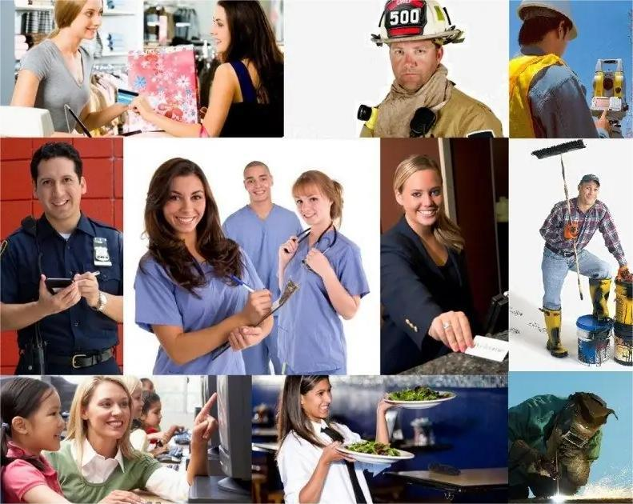
- Look at the photos and discuss these questions with another student.
a. Which category does each job belong to?
retail | manufacturing | creative | business | service | technical
b. Which of these jobs are skilled/unskilled, manual/clerical?
c. Which of these job categories are important in your country now? Has this always been the case?
d. Which categories do you think will be more or less important in the future? Why?
e. Which of these categories do you intend to work in?
2. Answer these questions ‘yes’ or ‘no’. Compare your answers with another student.
- Are you willing to take risks?
- Do you have one or more goals to achieve?
- Are you an optimist?
- Do you make the most of opportunities?
- Are you motivated and willing to work long hours?
- Do you believe in yourself?
- Can you bounce back after a setback?
- Can you stand by your actions in spite of criticism?
- Can you take your own decisions?
- Do you have the potential to lead people?
3. Read how to interpret your answers. Answer the questions with another student.
- If you answered ‘yes’ to six or more of the questions, then you probably have what it takes to run your own business.
- If you answered ‘yes’ to five or fewer, you may not yet have what's required to run a business. If you really want to go it alone, then you'll need to work on your weaknesses.
a. Do you think you could run your own business now? Why/Why not?
b. What type of business would you like to run one day?
Orientation
- Which three of these do you think are most important in a job? Which three are least important? Give reasons.
READING
Answer · 7.1
7.1
ANSWER 7.1
Retail-R Manual-C Bounce back-B Setback-O Maternity-A Workmates-P Childcare-Q Sabbatical-I payroll-S drop subject-E Jammy-K sneaking respect-N Rewarding-G restless-T Slump-D acquire skills-M Redundancy-J Work-life-L Scapegoat-F Sap-H
You are going to read a true story from a book on management called The Living Dead by David Bolchover. Before you read, work in pairs and discuss what you think the theme of the book might be given the title.
Read Part 1 of the story. Then answer the questions with your partner:
- What has happened to David (the author)?
- How does his friend feel about it?
- Why do you think David feels the system (of work) is cheating itself?
- How do you think the situation came about?
Read Part 2 of the story and find out:
- how the situation came about.
- how it ended.
- who ‘the living dead’ are.
THE LIVING DEAD
PART 1
I'm sitting in a café with my friend Paul. He lives in the States now and I haven't had the chance to chat with him for months.
'Now let me get this straight,' he leans forward on the edge of his seat. 'Your company has forgotten about you? You're on the payroll, but you've got nothing to do. And how long did you say this has been going on?'
'Six months.'
Paul leans further forward. It's clear he's not going to drop the subject.
'They pay you a full salary for sitting on your backside at home, apart from the times when you're not at home, but out and about with your mates or travelling round Europe to watch Man United play in the Champions League?'
'No, you've missed a bit; you've forgotten the rugby and the...'
All the conversations I've had about this period of my life contain those words or similar. There is a depressing inevitability about it, although I always enjoy the sneaking respect I sense I get from people for having cheated the system. Except that I wasn't cheating the system. The system was cheating itself.
PART 2
I'd joined Giant – a big multinational insurance company – in June of 1997. The job was financially rewarding, but I quickly started to feel restless as some days I did nothing apart from make the occasional call. The Internet still hadn't taken off so I spent hours staring at the wall, drifting off into my own little world, while all my vitality slowly drained away. Every morning, I'd get up full of life, and every evening, I'd return with my shoulders slumped, my head bent and my mind numb. I was joining the terrible world of the living dead.
I decided that if I was going to get ahead, I needed to acquire new skills. It was clear that in my current post I wasn't exactly going to race to the top of the insurance world so I decided to persuade Giant to sponsor me to take a year off to do an MBA in return for me committing to the company afterwards. I presented the idea to my boss. He was about to retire and was looking for an easy life so he quickly agreed and, with his backing, the process was a formality.
The MBA filled me with renewed energy and optimism. After six months, I went back to the office to see my boss in readiness for my return on October 4th. I explained how the course had sparked my interest in management and business strategy. I suggested it was pointless me going back to what I had been doing and that instead Giant might think about a suitable post that would get the most out of its investment. It was a good speech full of common sense, but from the dull look in my boss's eyes I could've been talking to an Italian about cricket. You could tell his mind was drifting off to another place rather than focusing on a job which could benefit both me and the company. As a result, I consulted human resources. The woman I spoke to nodded and sounded interested and said she'd set the wheels in motion.
However, months past and I heard nothing. I was beginning to worry, not to say get angry, at the lack of communication so I arranged an appointment with someone higher up in HR. It didn't go well and on reflection I can imagine what he was thinking. 'I've got this guy who's a pain in the neck. We owe him a job, but he doesn't want to go back to his old post and there's no point in him going there on a temporary basis. It'd be better if I just passed this on to someone else to sort out before he makes me look like a fool.'
The 4th of October came. Nothing. A few days later, the guy from HR put me in contact with a guy in Finance, for whom I worked on a project at home but which he quickly dropped. A few weeks went by. Nothing. Well, nothing apart from October 26th when a nice big juicy pay cheque dropped through my letterbox.
In mid-November, the finance guy rang and told me to see this guy Nick, who was brilliant at assessing people and placing them in the post which would enthuse them most. It sounded impressive but the results weren't. After scheduling some meetings that didn't go anywhere, he came to the conclusion that basically people with MBAs didn't fit into the insurance sector, which rather begs the question: why on earth did Giant – an insurance company – agree to fund me?!
The months passed and I decided I should find a job elsewhere. Ironically, I was just about to phone my department to let them know I was leaving when HR called, inviting me to a meeting with the big boss. They were going to make me redundant! Of course! It's only fair that after being with the company for over two years and having done nothing for the previous ten months, I should get a redundancy payment and one-month's notice to leave. As I left the meeting, the big boss accompanied me to the lift. He uncomfortably tried to start some small talk. 'So ... er ... what have you been doing for the last few months?'
All I could think of was a variety of football matches, sunny days walking round London Zoo, afternoons in the cinema. However, instead I heard myself saying, 'Obviously, it's been a difficult time for me and my family.'
Extracts adapted from
The Living Dead by David Bolchover
Answer · 7.living
7.living
ANSWER — The Living Dead
Part 1:
1. The company “forgot” David: he is on the payroll but has had no work for ~6 months; he draws a salary, stays home / goes to matches.
2. Friend Paul is amazed and jealous (“jammy beggar”) and won’t drop the topic.
3. He is not “cheating the system” — the system itself pays for nothing; it is cheating itself.
4. (guess → confirmed in Part 2) after the MBA they found no suitable post.
Part 2:
How it happened: boring job at Giant → company sponsored an MBA → on return boss/HR failed to place him → odd projects, then silence, but pay continued.
How it ended: made redundant + redundancy payment + one month’s notice.
“Living dead” — people whose work drains life/energy even though they formally “work” / sit in an empty corporate role.
Discussion (sample):
— Not a total freak case: HR bureaucracy is real.
— Blame: passive boss, HR, and partly David for letting it drag on.
— Lesson: agree the role before/after training in writing; don’t disappear from the system.
With your partner, discuss the questions.
- Do you think what happened was a freak occurrence?
- Who was most to blame for the situation? Why?
- What lessons can you take from the story?
Work in groups. Discuss the questions.
- Do you agree with David Bolchover's ideas? Why? / Why not?
- What would you have done in his situation?
- Have you heard of any instances of incompetence in the workplace? What happened?
- How do people get to the top at work? Does it depend on the industry? In what way?
- Which person you know has the best work-life balance?
Listening
Section 1
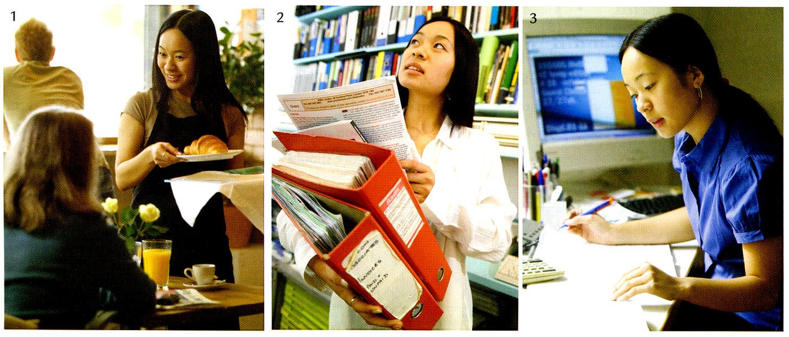
1 Look at the photos and answer the questions.
a What job is this? What does the employee have to do?
b Which of the following are necessary for this job?
- language skills
- communication skills
- IT and keyboard skills
- organizational skills
c Which of these qualities are needed for each job?
- Intelligence
- patience
- experience
- energy
- creativity
- punctuality
- honesty
What are the adjectives formed from these words? Which adjectives describe you?
d Would you like to do this job while you study? Why?/Why not?
2 Study the questions and unfinished statements in 1–5 below. What answers do you think you might hear for each?
Questions 1–5: Multiple-choice questions
Choose the correct letter, A, B, or C.
- Steve phones the agency to find out about
- A a permanent post at a call centre.
- B the nature of the job advertised.
- C the amount he would be paid.
- Ellen says the problem with some students is that they
- A are not completely honest.
- B lack essential IT skills.
- C arrive late for work.
- Steve would mainly take calls from customers
- A who want information about their credit card accounts.
- B whose credit cards have been stolen.
- C who have lost their credit cards.
- Which chart shows the current proportion of female to male callers?
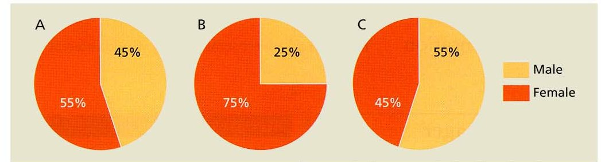
5. Ellen says that call centre operatives should be
- A experienced.
- B intelligent.
- C helpful.
Questions 6-10: Labelling a map
- Listen to the second part of the recording and label the map below with the correct letter.
Map Labelling Options:
| 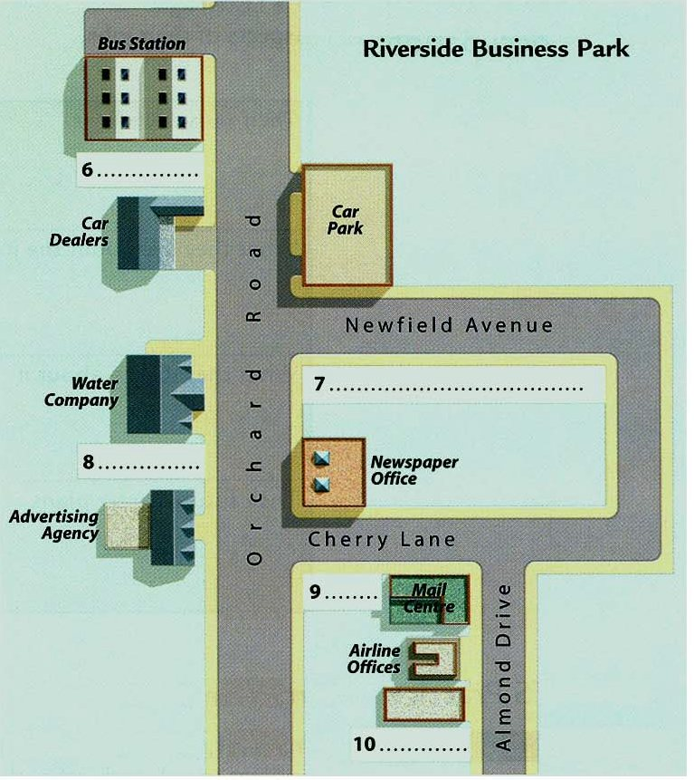 |
3 Discuss these questions with other students.
a What other qualities might also be required to do the job described by the speaker?
b Would you like to do this job? Give reasons.
GRAMMAR: Revision
Exercise 1: Fill the blanks with correct present tense forms
- Jobs ___ (believe) that intuition ___ (be) crucial for innovation.
- Right now, many students ___ (listen) to his speech on YouTube.
- Since 2005, his words ___ (inspire) millions worldwide.
- The university ___ (offer) courses that ___ (shape) future innovators.
Exercise 2: Choose the correct option:
- The CEO usually __________ (wears/is wearing) a bow tie to meetings, but today he __________ (wears/is wearing) a scarf.
- Our team __________ (achieves/is achieving) great results this year because we __________ (focus/are focusing) on innovation.
- Since the slump __________ (starts/has started), morale __________ (drops/has dropped) significantly.
Exercise 3: Transform these adjectives
- (Good) The Mac had ___ typography than PCs. Later, it became Jobs' ___ decision.
- (Bad) Getting fired felt ___ than expected but led to his ___ career phase.
- (Creative) Pixar was ___ than Apple in animation, soon becoming the ___ studio.
- (Rewarding) This is the ___ job I've had, though my workmates say theirs are ___.
- (Jammy) His promotion was ___ than hers, but the ___ moment was getting a sabbatical.
- (Manual) The ___ tasks became ___ after automation.
_____________________________________________________________________________________
Answer · ·
Exercises 1: 1 believes, is (PS) 2 are listening (PC) 3have inspired (PP) 4 offers, shape (PS)
Exercise 2: 1 wears, is wearing 2 is achieving, are focusing 3 started (Past Simple – but if forced into present: "has started"), has dropped
Exercise 3: 1 better, best 2 worse, worst 3 more creative, most creative 4 most rewarding, more rewarding 5 jammier, jammiest 6 manual, less manual
HOME ASSIGNMENT
Reading for gist
- Do you think work is good or bad for you? In what ways? Quickly read the text. What is the writer’s opinion?
The great work myth
Work gets a terrible press. Pick up any newspaper on almost any day and you’ll read about how work is killing our marriages, generating stress, depriving children of ‘quality time’, hollowing out local communities, and depressing us.
Work has become the scapegoat for all our woes. The case against work is put in persuasive terms on an almost daily basis. There is only one problem with it: it’s nonsense. For the truth is that, as far as work is concerned, we’ve never had it so good.
Germany, Italy, or Spain. Average earnings have increased, a lot of firms offer longer maternity leave, a third of firms now offer sabbaticals, and two-thirds allow their staff to work from home some of the time. The rhetoric about longer working hours also needs to be put in perspective. The average working day has increased in length over the last two decades, but by just one minute and forty-two seconds.
Despite all the improvements in work over recent decades, there is still an ingrained attitude that happiness lies outside work, that we are waiting for the weekend. This idea that work is essentially bad for us has a long history. Karl Marx described workers being ‘alienated’ from the product of their labour: ‘What, then, constitutes the alienation of labour?’ he asked. ‘First, the fact that labour is external to the worker, i.e. it does not belong to his essential being; that in his work he does not affirm himself but denies himself; does not feel content but unhappy; does not develop his physical and mental energy but mortifies his body and ruins his mind.’ However, relentless negativity about work condemns us to precisely the sort of work that Marx was trying to free us from 150 years ago. If we accept that work is dull and demeaning – a ransom paid for the hostage of our ‘free time’ – then we are allowing alienation to remain.
Work is becoming too important for it to be of dubious quality. Work is a community, the place where we meet friends and form relationships, a provider of our social as well as our work life. One in three of us meets most of our friends through work, two-thirds of us have dated someone at work, and, according to a poll by recruitment consultancy Sanders and Sidney, a quarter of us meet our life partners there. Work is also becoming a more important indicator of identity. Family, class, region, and religion are now less robust indicators, and work is filling the gap, making it the most important fact about ourselves we mention when we meet
In truth, they are simply made to feel as if they have a problem because of prevalent attitudes.
The shift of work towards the centre of our lives demonstrates the futility of much of the current debates about 'work/life balance'. It is true that some people are working longer hours. Yet the idea that it is being forced upon us without our choice just doesn't stack up. Take the people working the greatest number of hours - more than sixty a week. Surveys show that they are the ones who say they like their jobs the most. This may seem surprising, until you reflect that people who like something might do more of it than people who do not. People who love their jobs own up to having a 'work/life problem' because they put in more hours than they are strictly required to. In truth, they are simply made to feel as if they have a problem because of prevalent attitudes. Of course, this leaves open the question of who keeps the home fires burning and of the impact on children especially. It may be that people are choosing to invest less time and energy at home than others think they should, but, if these people get more out of their work than they do out of their home, then perhaps this is a clear and valid choice for people to be making.
Ultimately, our goal must be to begin seeing work as an intrinsic part of our life, rather than an adjunct to it. Theodore Zeldin, an Oxford don, has the right manifesto for the future of work: its abolition. But not in the way anti-work campaigners have in mind. 'We should abolish "work",' he says. 'By that I mean abolishing the distinction between work and leisure, one of the greatest mistakes of the last century, one that enables employers to keep workers in lousy jobs by granting them some leisure time. We should strive to be employed in such a way that we don't realize what we are doing is work.' Zeldin throws down the challenge for work in the twenty-first century. It is indeed time to abandon the notion of work as a downpayment on life, but, before we can do so, all the modern myths about work will have to be exposed: the ones that continue to stereotype work as intrinsically sapping, demeaning, and corrosive. It is time to give work a break.
3 Study these sentences. Which words establish the topic? Which other words carry the main content? What kinds of word are they, e.g. nouns, prepositions?
a) Nowadays, every problem we have is blamed on work.
b) In many companies, more time off can be taken after childbirth.
4 Find the parts of the text that express the same ideas as sentences a and b in 3. Which expressions have similar meanings to the key words you identified?
5 Before starting the IELTS task below, read the sentence stems 1–7. What are the key words or phrases in each of these?
Questions 1–7: Sentence completion
Complete each sentence with the correct ending A-L from the box below.
- According to the press, work
- A study in Britain indicates that job satisfaction
- The workforce of most British companies
- The current length of the working day
- Marx said that work
- The present-day cause of alienation from work
- Romantic involvement with a colleague
- began a century and a half ago.
B. is usually followed by marriage.
C. is the belief that work is bad for us.
D. can do some of their work at home.
E. makes no sense at all.
F. happens to most people.
G. causes employees physical harm.
H. is better paid than in the past.
I. is little more than it was twenty years ago.
J. is higher than in other countries.
K. is much higher than it used to be.
L. destroys relationships.
- began a century and a half ago.
6 Read the summary of part of 'The great work myth' on page 61. Quickly identify which paragraphs of the text the summary relates to.
Questions 8–12: Summary completion
Complete the summary with words (A-K) from the box below.
We should recognize that work provides a structure within which people build
(8) ......, sometimes for a lifetime, and plays a growing role in establishing our (9) ...... compared with other factors like social background. Most people who spend longer at work do so by (10) ....... There is some debate about the damage this may cause to their (11) ......, but that is for individuals to decide. One solution to the problem of work/life balance is to redefine it, removing the view that our work should be a sacrifice we make for our
(12) ......
| A | leisure | F | identity |
| B | relationships | G | partners |
| C | skills | H | children |
| D | health | I | income |
| E | choice | K | force |
7 To avoid repetition, part of a sentence can be left out without changing the meaning.
Example:
"work is killing our marriages, work is generating stress, work is depriving children ..."
What has the writer of the text left out of a-h?
a. more ...... than in France (line 11)
b. two-thirds ...... allow their staff (line 14)
c. but ...... by just one minute (line 19)
d. ...... a provider of our social (line 42)
e. they are strictly required to ...... (line 67)
f. and ...... of the impact (line 71)
g. others think they should ...... (line 73)
h. rather than ...... an adjunct (line 78)
8 Part of a sentence can be replaced with do, so, not, one, or ones.
What have the underlined words in italic in a-f replaced?
a. the ones who say they like their jobs (line 61)
b. people who do not (line 64)
c. than they do out of their home (line 75)
d. one that enables employers (line 84)
e. before we can do so (line 91)
f. the ones that continue (line 93)
9 Discuss these questions with another student.
Answer · 7.myth
7.myth
ANSWER — The great work myth
Gist / author’s view: work gets a bad press, but in fact “we’ve never had it so good”; work is community and identity; the myth “work = evil” is harmful; the aim is to erase the hard border between work and leisure (Zeldin).
1–7 (sentence endings): L, J, D, I, G, C, F
8–12 (summary): B relationships; F identity; E choice; H children; A leisure
Discussion (sample):
a. Yes, work’s role is changing: fewer class/family anchors, more identity through the job; flexible work, sabbaticals, home working.
b. Author: many choose long hours because they love the work; that can be a valid choice, but there is a family/children question. Agreement — partial.
c. The ideal “work = leisure” is ambitious, but as a goal (making work meaningful) it is realistic step by step; fully erasing the border is hard.
a. Do you agree that the role of work in our lives is changing? In what ways?
b. How far do you agree with the writer’s assertion that it is reasonable for people to put their work before their relationships and their families?
c. Do you think it is realistic to aim at making work as enjoyable as leisure? Why?/Why not?
This list includes key academic terms, their transcriptions, and brief definitions.
A
Alumnus /əˈlʌmnəs/ (pl. alumni) – a graduate of a university
Astronomy /əˈstrɒnəmi/ – the scientific study of stars and planets
Appendix /əˈpendɪks/ (pl. appendices) – additional material at the end of a book
B
Bachelor’s degree /ˈbætʃələrz dɪˈɡriː/ – an undergraduate academic degree
Biology /baɪˈɒlədʒi/ – the study of living organisms
C
Chemistry /ˈkemɪstri/ – the science of substances and their reactions
Curriculum /kəˈrɪkjʊləm/ (pl. curricula) – subjects taught in a course
D
Dissertation /ˌdɪsəˈteɪʃən/ – a long essay for a university degree
E
Embryology /ˌembrɪˈɒlədʒi/ – the study of embryos
Economics /ˌiːkəˈnɒmɪks/ – the study of production and consumption
F
Faculty /ˈfækəlti/ – a university department
G
Geology /dʒiˈɒlədʒi/ – the study of Earth’s physical structure
H
Hypothesis /haɪˈpɒθəsɪs/ (pl. hypotheses) – a proposed explanation
I
Institution /ˌɪnstɪˈtjuːʃən/ – an established organization
L
Locus /ˈləʊkəs/ (pl. loci) – a particular position
M
Mathematics /ˌmæθəˈmætɪks/ – the study of numbers and shapes
Master’s degree /ˈmɑːstərz dɪˈɡriː/ – a postgraduate degree
P
Philosophy /fɪˈlɒsəfi/ – the study of fundamental questions
Phenomenon /fəˈnɒmɪnən/ (pl. phenomena) – an observable event
S
Seminary /ˈsemɪnəri/ – a training college for priests
Sociology /ˌsəʊsiˈɒlədʒi/ – the study of society
T
Thesis /ˈθiːsɪs/ (pl. theses) – a statement supported by arguments
Theology /θiˈɒlədʒi/ – the study of religion
U
Undergraduate /ˌʌndəˈɡrædʒuət/ – a university student before graduation